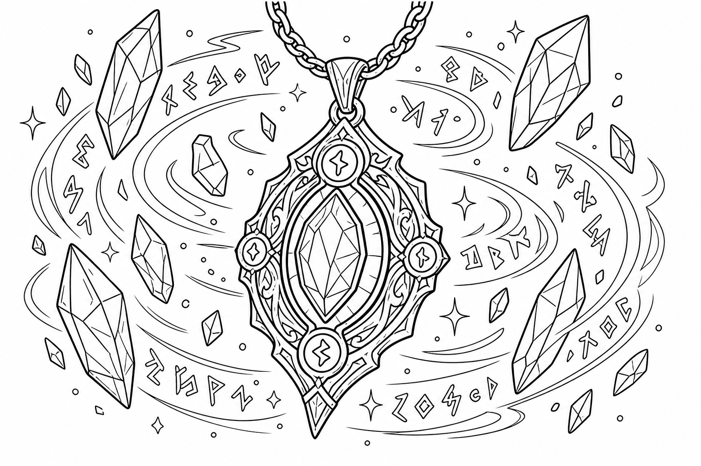

Legendary loot, glowing swords, and wondrous artifacts!
| Item | Rarity | Description |
|---|---|---|
| Adamantine Armor | Uncommon | Armor (medium or heavy, but not hide), uncommon This suit of armor is reinforced with adamantine, one of the hardest substances in existence. While you're wearing it, any critical hit against you becomes a normal hit. |
| Ammunition, +1, +2, or +3 | Varies | Weapon (any ammunition), uncommon (+1), rare (+2), or very rare (+3) You have a bonus to attack and damage rolls made with this piece of magic ammunition. The bonus is determined by the rarity of the ammunition. Once it hits a target, the ammunition is no longer magical. |
| Ammunition, +1 | Uncommon | Weapon (any ammunition), uncommon You have a +1 bonus to attack and damage rolls made with this piece of magic ammunition. Once it hits a target, the ammunition is no longer magical. |
| Ammunition, +2 | Rare | Weapon (any ammunition), rare You have a +2 bonus to attack and damage rolls made with this piece of magic ammunition. Once it hits a target, the ammunition is no longer magical. |
| Ammunition, +3 | Very Rare | Weapon (any ammunition), very rare You have a +3 bonus to attack and damage rolls made with this piece of magic ammunition. Once it hits a target, the ammunition is no longer magical. |
| Amulet of Health | Rare | Wondrous item, rare (requires attunement) Your Constitution score is 19 while you wear this amulet. It has no effect on you if your Constitution is already 19 or higher |
| Amulet of Proof against Detection and Location | Uncommon | Wondrous item, uncommon (requires attunement) While wearing this amulet, you are hidden from divination magic. You can't be targeted by such magic or perceived through magical scrying sensors. |
| Amulet of the Planes | Very Rare | Wondrous item, very rare (requires attunement) While wearing this amulet, you can use an action to name a location that you are familiar with on another plane of existence. Then make a DC 15 Intelligence check. On a successful check, you cast the plane shift spell. On a failure, you and each creature and object within 15 feet of you travel to a random destination. Roll a d100. On a 1-60, you travel to a random location on the plane you named. On ... (Ask your DM for full details!) |
| Animated Shield | Very Rare | Armor (shield), very rare (requires attunement) While holding this shield, you can speak its command word as a bonus action to cause it to animate. The shield leaps into the air and hovers in your space to protect you as if you were wielding it, leaving your hands free. The shield remains animated for 1 minute, until you use a bonus action to end this effect, or until you are incapacitated or die, at which point the shield falls to the ground or ... (Ask your DM for full details!) |
| Apparatus of the Crab | Legendary | Wondrous item, legendary This item first appears to be a Large sealed iron barrel weighing 500 pounds. The barrel has a hidden catch, which can be found with a successful DC 20 Intelligence (Investigation) check. Releasing the catch unlocks a hatch at one end of the barrel, allowing two Medium or smaller creatures to crawl inside. Ten levers are set in a row at the far end, each in a neutral position, able to move either up or down. When certain ... (Ask your DM for full details!) |
| Armor, +1, +2, or +3 | Varies | Armor (light, medium, or heavy), rare (+1), very rare (+2), or legendary (+3) You have a bonus to AC while wearing this armor. The bonus is determined by its rarity. |
| Armor, +1 | Rare | Armor (light, medium, or heavy), rare You have a +1 bonus to AC while wearing this armor. |
| Armor, +2 | Very Rare | Armor (light, medium, or heavy), very rare You have a +2 bonus to AC while wearing this armor. |
| Armor, +3 | Legendary | Armor (light, medium, or heavy), legendary You have a +3 bonus to AC while wearing this armor. |
| Armor of Invulnerability | Legendary | Armor (plate), legendary (requires attunement) You have resistance to nonmagical damage while you wear this armor. Additionally, you can use an action to make yourself immune to nonmagical damage for 10 minutes or until you are no longer wearing the armor. Once this special action is used, it can't be used again until the next dawn. |
| Armor of Resistance | Rare | Armor (light, medium, or heavy), rare (requires attunement) You have resistance to one type of damage while you wear this armor. The GM chooses the type or determines it randomly from the options below. | d10 | Damage Type | |---|---| | 1 | Acid | | 2 | Cold | | 3 | Fire | | 4 | Force | | 5 | Lightning | | 6 | Necrotic | | 7 | Poison | | 8 | Psychic | | 9 | Radiant | | 10 | Thunder | |
| Armor of Vulnerability | Rare | Armor (plate), rare (requires attunement) While wearing this armor, you have resistance to one of the following damage types: bludgeoning, piercing, or slashing. The GM chooses the type or determines it randomly. ***Curse.*** This armor is cursed, a fact that is revealed only when an identify spell is cast on the armor or you attune to it. Attuning to the armor curses you until you are targeted by the remove curse spell or similar magic; removin... (Ask your DM for full details!) |
| Arrow-Catching Shield | Rare | Armor (shield), rare (requires attunement) You gain a +2 bonus to AC against ranged attacks while you wield this shield. This bonus is in addition to the shield's normal bonus to AC. In addition, whenever an attacker makes a ranged attack against a target within 5 feet of you, you can use your reaction to become the target of the attack instead. |
| Arrow of Slaying | Very Rare | Weapon (arrow), very rare An arrow of slaying is a magic weapon meant to slay a particular kind of creature. Some are more focused than others; for example, there are both arrows of dragon slaying and arrows of blue dragon slaying. If a creature belonging to the type, race, or group associated with an arrow of slaying takes damage from the arrow, the creature must make a DC 17 Constitution saving throw, taking an extra 6d10 piercing damage on a f... (Ask your DM for full details!) |
| Bag of Beans | Rare | Wondrous item, rare Inside this heavy cloth bag are 3d4 dry beans. The bag weighs 1/2 pound plus 1/4 pound for each bean it contains. If you dump the bag's contents out on the ground, they explode in a 10-foot radius, extending from the beans. Each creature in the area, including you, must make a DC 15 Dexterity saving throw, taking 5d4 fire damage on a failed save, or half as much damage on a successful one. The fire ignites flammable object... (Ask your DM for full details!) |
| Bag of Devouring | Very Rare | Wondrous item, very rare This bag superficially resembles a bag of holding but is a feeding orifice for a gigantic extradimensional creature. Turning the bag inside out closes the orifice. The extradimensional creature attached to the bag can sense whatever is placed inside the bag. Animal or vegetable matter placed wholly in the bag is devoured and lost forever. When part of a living creature is placed in the bag, as happens when someone reaches... (Ask your DM for full details!) |
| Bag of Holding | Uncommon | Wondrous item, uncommon This bag has an interior space considerably larger than its outside dimensions, roughly 2 feet in diameter at the mouth and 4 feet deep. The bag can hold up to 500 pounds, not exceeding a volume of 64 cubic feet. The bag weighs 15 pounds, regardless of its contents. Retrieving an item from the bag requires an action. If the bag is overloaded, pierced, or torn, it ruptures and is destroyed, and its contents are scattered in... (Ask your DM for full details!) |
| Bag of Tricks | Uncommon | Wondrous item, uncommon This ordinary bag, made from gray, rust, or tan cloth, appears empty. Reaching inside the bag, however, reveals the presence of a small, fuzzy object. The bag weighs 1/2 pound. You can use an action to pull the fuzzy object from the bag and throw it up to 20 feet. When the object lands, it transforms into a creature you determine by rolling a d8 and consulting the table that corresponds to the bag's color. The creature van... (Ask your DM for full details!) |
| Gray Bag of Tricks | Uncommon | Wondrous item, uncommon This ordinary bag, made from gray cloth, appears empty. Reaching inside the bag, however, reveals the presence of a small, fuzzy object. The bag weighs 1/2 pound. You can use an action to pull the fuzzy object from the bag and throw it up to 20 feet. When the object lands, it transforms into a creature you determine by rolling a d8 and consulting the table that corresponds to the bag's color. The creature vanishes at the n... (Ask your DM for full details!) |
| Rust Bag of Tricks | Uncommon | Wondrous item, uncommon This ordinary bag, made from rust cloth, appears empty. Reaching inside the bag, however, reveals the presence of a small, fuzzy object. The bag weighs 1/2 pound. You can use an action to pull the fuzzy object from the bag and throw it up to 20 feet. When the object lands, it transforms into a creature you determine by rolling a d8 and consulting the table that corresponds to the bag's color. The creature vanishes at the n... (Ask your DM for full details!) |
| Tan Bag of Tricks | Uncommon | Wondrous item, uncommon This ordinary bag, made from tan cloth, appears empty. Reaching inside the bag, however, reveals the presence of a small, fuzzy object. The bag weighs 1/2 pound. You can use an action to pull the fuzzy object from the bag and throw it up to 20 feet. When the object lands, it transforms into a creature you determine by rolling a d8 and consulting the table that corresponds to the bag's color. The creature vanishes at the ne... (Ask your DM for full details!) |
| Bead of Force | Rare | Wondrous item, rare This small black Sphere measures 3/4 of an inch in diameter and weighs an ounce. Typically, 1d4 + 4 beads of force are found together. You can use an action to throw the bead up to 60 feet. The bead explodes on impact and is destroyed. Each creature within a 10-foot radius of where the bead landed must succeed on a DC 15 Dexterity saving throw or take 5d4 force damage. A Sphere of transparent force then encloses the area for 1... (Ask your DM for full details!) |
| Belt of Dwarvenkind | Rare | Wondrous Items, rare (requires attunement) While wearing this belt, you gain the following benefits: Your Constitution score increases by 2, to a maximum of 20. You have advantage on Charisma (Persuasion) checks made to interact with Dwarves. In addition, while attuned to the belt, you have a 50 percent chance each day at dawn of growing a full beard if you're capable of growing one, or a visibly thicker beard if you already have one. If you aren... (Ask your DM for full details!) |
| Belt of Giant Strength | Varies | Wondrous item, rarity varies (requires attunement) While wearing this belt, your Strength score changes to a score granted by the belt. If your Strength is already equal to or greater than the belt's score, the item has no Effect on you. Six varieties of this belt exist, corresponding with and having rarity according to The Six kinds of true Giants. The belt of Stone Giant Strength and the belt of Frost Giant Strength look different, but they hav... (Ask your DM for full details!) |
| Belt of Cloud Giant Strength | Legendary | Wondrous item, legendary (requires attunement) While wearing this belt, your Strength score changes to 27. If your Strength is already equal to or greater than the belt's score, the item has no Effect on you. |
| Belt of Fire Giant Strength | Very Rare | Wondrous item, very rare (requires attunement) While wearing this belt, your Strength score changes to 25. If your Strength is already equal to or greater than the belt's score, the item has no Effect on you. |
| Belt of Frost Giant Strength | Very Rare | Wondrous item, very rare (requires attunement) While wearing this belt, your Strength score changes to 23. If your Strength is already equal to or greater than the belt's score, the item has no Effect on you. |
| Belt of Hill Giant Strength | Rare | Wondrous item, rare (requires attunement) While wearing this belt, your Strength score changes to a 21. If your Strength is already equal to or greater than the belt's score, the item has no Effect on you. |
| Belt of Stone Giant Strength | Very Rare | Wondrous item, very rare (requires attunement) While wearing this belt, your Strength score changes to a 23. If your Strength is already equal to or greater than the belt's score, the item has no Effect on you. |
| Belt of Storm Giant Strength | Legendary | Wondrous item, legendary (requires attunement) While wearing this belt, your Strength score changes to 29. If your Strength is already equal to or greater than the belt's score, the item has no Effect on you. |
| Berserker Axe | Rare | Weapon (any axe), rare (requires attunement) You gain a +1 bonus to Attack and Damage Rolls made with this Magic Weapon. In addition, while you are attuned to this weapon, your Hit Points maximum increases by 1 for each level you have attained. ***Curse.*** This axe is Cursed, and becoming attuned to it extends the curse to you. As long as you remain Cursed, you are unwilling to part with the axe, keeping it within reach at all times. You also ha... (Ask your DM for full details!) |
| Boots of Elvenkind | Uncommon | Wondrous item, uncommon While you wear these boots, your steps make no sound, regardless of the surface you are moving across. You also have advantage on Dexterity (Stealth) checks that rely on moving silently. |
| Boots of Levitation | Rare | Wondrous item, rare (requires attunement) While you wear these boots, you can use an action to cast the levitate spell on yourself at will. |
| Boots of Speed | Rare | Wondrous item, rare (requires attunement) While you wear these boots, you can use a bonus action and click the boots' heels together. If you do, the boots double your walking speed, and any creature that makes an opportunity attack against you has disadvantage on the attack roll. If you click your heels together again, you end the effect. When the boots' property has been used for a total of 10 minutes, the magic ceases to function until you fini... (Ask your DM for full details!) |
| Boots of Striding and Springing | Uncommon | Wondrous item, uncommon (requires attunement) While you wear these boots, your walking speed becomes 30 feet, unless your walking speed is higher, and your speed isn't reduced if you are encumbered or wearing heavy armor. In addition, you can jump three times the normal distance, though you can't jump farther than your remaining movement would allow. |
| Boots of the Winterlands | Uncommon | Wondrous item, uncommon (requires attunement) These furred boots are snug and feel quite warm. While you wear them, you gain the following benefits: * You have resistance to cold damage. * You ignore difficult terrain created by ice or snow. * You can tolerate temperatures as low as -50 degrees Fahrenheit without any additional protection. If you wear heavy clothes, you can tolerate temperatures as low as -100 degrees Fahrenheit. |
| Bowl of Commanding Water Elementals | Rare | Wondrous item, rare While this bowl is filled with water, you can use an action to speak the bowl's command word and summon a water elemental, as if you had cast the conjure elemental spell. The bowl can't be used this way again until the next dawn. The bowl is about 1 foot in diameter and half as deep. It weighs 3 pounds and holds about 3 gallons. |
| Bracers of Archery | Uncommon | Wondrous item, uncommon (requires attunement) While wearing these bracers, you have proficiency with the longbow and shortbow, and you gain a +2 bonus to damage rolls on ranged attacks made with such weapons. |
| Bracers of Defense | Rare | Wondous item, rare (requires attunement) While wearing these bracers, you gain a +2 bonus to AC if you are wearing no armor and using no shield. |
| Brazier of Commanding Fire Elementals | Rare | Wondrous item, rare While a fire burns in this brass brazier, you can use an action to speak the brazier's command word and summon a fire elemental, as if you had cast the conjure elemental spell. The brazier can't be used this way again until the next dawn. The brazier weighs 5 pounds. |
| Brooch of Shielding | Uncommon | Wondrous item, uncommon (requires attunement) While wearing this brooch, you have resistance to force damage, and you have immunity to damage from the magic missile spell. |
| Broom of Flying | Uncommon | Wondrous item, uncommon This wooden broom, which weighs 3 pounds, functions like a mundane broom until you stand astride it and speak its command word. It then hovers beneath you and can be ridden in the air. It has a flying speed of 50 feet. It can carry up to 400 pounds, but its flying speed becomes 30 feet while carrying over 200 pounds. The broom stops hovering when you land. You can send the broom to travel alone to a destination within 1 mi... (Ask your DM for full details!) |
| Candle of Invocation | Very Rare | Wondrous item, very rare (requires attunement) This slender taper is dedicated to a deity and shares that deity's alignment. The candle's alignment can be detected with the detect evil and good spell. The GM chooses the god and associated alignment or determines the alignment randomly. | d20 | Alignment | |---|---| | 1-2 | Chaotic evil | | 3-4 | Chaotic neutral | | 5-7 | Chaotic good | | 8-9 | Neutral evil | | 10-11 | Neutral | | 12-13 | Neutral ... (Ask your DM for full details!) |
| Cape of the Mountebank | Rare | Wondrous item, rare This cape smells faintly of brimstone. While wearing it, you can use it to cast the dimension door spell as an action. This property of the cape can't be used again until the next dawn. When you disappear, you leave behind a cloud of smoke, and you appear in a similar cloud of smoke at your destination. The smoke lightly obscures the space you left and the space you appear in, and it dissipates at the end of your next turn. A ... (Ask your DM for full details!) |
| Carpet of Flying | Very Rare | Wondrous item, very rare You can speak the carpet's command word as an action to make the carpet hover and fly. It moves according to your spoken directions, provided that you are within 30 feet of it. Four sizes of carpet of flying exist. The GM chooses the size of a given carpet or determines it randomly. | d100 | Size | Capacity | Flying Speed | |---|---|---|---| | 01-20 | 3 ft. × 5 ft. | 200 lb. | 80 feet | | 21-55 | 4 ft. × 6 ft. | 400 lb. ... (Ask your DM for full details!) |
| Carpet of Flying (3 ft. × 5 ft.) | Very Rare | Wondrous item, very rare You can speak the carpet's command word as an action to make the carpet hover and fly. It moves according to your spoken directions, provided that you are within 30 feet of it. This carpet is 3 feet by 5 feet and has a flying speed of 80 feet. It can carry up to 400 pounds, but its flying speed becomes 40 feet while carrying over 200 pounds. |
| Carpet of Flying (4 ft. × 6 ft.) | Very Rare | Wondrous item, very rare You can speak the carpet's command word as an action to make the carpet hover and fly. It moves according to your spoken directions, provided that you are within 30 feet of it. This carpet is 4 feet by 6 feet and has a flying speed of 60 feet. It can carry up to 800 pounds, but its flying speed becomes 30 feet while carrying over 400 pounds. |
| Carpet of Flying (5 ft. × 7 ft.) | Very Rare | Wondrous item, very rare You can speak the carpet's command word as an action to make the carpet hover and fly. It moves according to your spoken directions, provided that you are within 30 feet of it. This carpet is 5 feet by 7 feet and has a flying speed of 40 feet. It can carry up to 1200 pounds, but its flying speed becomes 20 feet while carrying over 600 pounds. |
| Carpet of Flying (6 ft. × 9 ft.) | Very Rare | Wondrous item, very rare You can speak the carpet's command word as an action to make the carpet hover and fly. It moves according to your spoken directions, provided that you are within 30 feet of it. This carpet is 6 feet by 9 feet and has a flying speed of 30 feet. It can carry up to 1600 pounds, but its flying speed becomes 15 feet while carrying over 800 pounds. |
| Censer of Controlling Air Elementals | Rare | Wondrous item, rare While incense is burning in this censer, you can use an action to speak the censer's command word and summon an air elemental, as if you had cast the conjure elemental spell. The censer can't be used this way again until the next dawn. This 6-inch-wide, 1-foot-high vessel resembles a chalice with a decorated lid. It weighs 1 pound. |
| Chime of Opening | Rare | Wondrous item, rare This hollow metal tube measures about 1 foot long and weighs 1 pound. You can strike it as an action, pointing it at an object within 120 feet of you that can be opened, such as a door, lid, or lock. The chime issues a clear tone, and one lock or latch on the object opens unless the sound can't reach the object. If no locks or latches remain, the object itself opens. The chime can be used ten times. After the tenth time, it cr... (Ask your DM for full details!) |
| Circlet of Blasting | Uncommon | Wondrous item, uncommon While wearing this circlet, you can use an action to cast the scorching ray spell with it. When you make the spell's attacks, you do so with an attack bonus of +5. The circlet can't be used this way again until the next dawn. |
| Cloak of Arachnida | Very Rare | Wondrous item, very rare (requires attunement) This fine garment is made of black silk interwoven with faint silvery threads. While wearing it, you gain the following benefits: * You have resistance to poison damage. * You have a climbing speed equal to your walking speed. * You can move up, down, and across vertical surfaces and upside down along ceilings, while leaving your hands free. * You can't be caught in webs of any sort and can move thro... (Ask your DM for full details!) |
| Cloak of Displacement | Rare | Wondrous item, rare (requires attunement) While you wear this cloak, it projects an illusion that makes you appear to be standing in a place near your actual location, causing any creature to have disadvantage on attack rolls against you. If you take damage, the property ceases to function until the start of your next turn. This property is suppressed while you are incapacitated, restrained, or otherwise unable to move. |
| Cloak of Elvenkind | Uncommon | Wondrous item, uncommon (requires attunement) While you wear this cloak with its hood up, Wisdom (Perception) checks made to see you have disadvantage, and you have advantage on Dexterity (Stealth) checks made to hide, as the cloak's color shifts to camouflage you. Pulling the hood up or down requires an action. |
| Cloak of Protection | Uncommon | Wondrous item, uncommon (requires attunement) You gain a +1 bonus to AC and saving throws while you wear this cloak. |
| Cloak of the Bat | Rare | Wondrous item, rare (requires attunement) While wearing this cloak, you have advantage on Dexterity (Stealth) checks. In an area of dim light or darkness, you can grip the edges of the cloak with both hands and use it to fly at a speed of 40 feet. If you ever fail to grip the cloak's edges while flying in this way, or if you are no longer in dim light or darkness, you lose this flying speed. While wearing the cloak in an area of dim light or dark... (Ask your DM for full details!) |
| Cloak of the Manta Ray | Uncommon | Wondrous item, uncommon While wearing this cloak with its hood up, you can breathe underwater, and you have a swimming speed of 60 feet. Pulling the hood up or down requires an action. |
| Crystal Ball | Very Rare | Wondrous item, very rare or legendary (requires attunement) The typical crystal ball, a very rare item, is about 6 inches in diameter. While touching it, you can cast the scrying spell (save DC 17) with it. The following crystal ball variants are legendary items and have additional properties. ***Crystal Ball of Mind Reading.*** You can use an action to cast the detect thoughts spell (save DC 17) while you are scrying with the crystal ball, targe... (Ask your DM for full details!) |
| Crystal Ball of Mind Reading | Legendary | Wondrous item, legendary (requires attunement) The crystal ball is about 6 inches in diameter. While touching it, you can cast the scrying spell (save DC 17) with it. ***Crystal Ball of Mind Reading.*** You can use an action to cast the detect thoughts spell (save DC 17) while you are scrying with the crystal ball, targeting creatures you can see within 30 feet of the spell's sensor. You don't need to concentrate on this detect thoughts to mainta... (Ask your DM for full details!) |
| Crystal Ball of Telepathy | Legendary | Wondrous item, legendary (requires attunement) The crystal ball is about 6 inches in diameter. While touching it, you can cast the scrying spell (save DC 17) with it. ***Crystal Ball of Telepathy.*** While scrying with the crystal ball, you can communicate telepathically with creatures you can see within 30 feet of the spell's sensor. You can also use an action to cast the suggestion spell (save DC 17) through the sensor on one of those creatures... (Ask your DM for full details!) |
| Crystal Ball of True Seeing | Legendary | Wondrous item, legendary (requires attunement) The crystal ball is about 6 inches in diameter. While touching it, you can cast the scrying spell (save DC 17) with it. ***Crystal Ball of True Seeing.*** While scrying with the crystal ball, you have truesight with a radius of 120 feet centered on the spell's sensor. |
| Cube of Force | Rare | Wondrous item, rare (requires attunement) This cube is about an inch across. Each face has a distinct marking on it that can be pressed. The cube starts with 36 charges, and it regains 1d20 expended charges daily at dawn. You can use an action to press one of the cube's faces, expending a number of charges based on the chosen face, as shown in the Cube of Force Faces table. Each face has a different effect. If the cube has insufficient charges re... (Ask your DM for full details!) |
| Cubic Gate | Legendary | Wondrous item, legendary This cube is 3 inches across and radiates palpable magical energy. The six sides of the cube are each keyed to a different plane of existence, one of which is the Material Plane. The other sides are linked to planes determined by the GM. You can use an action to press one side of the cube to cast the gate spell with it, opening a portal to the plane keyed to that side. Alternatively, if you use an action to press one side... (Ask your DM for full details!) |
| Dagger of Venom | Rare | Weapon (dagger), rare You gain a +1 bonus to attack and damage rolls made with this magic weapon. You can use an action to cause thick, black poison to coat the blade. The poison remains for 1 minute or until an attack using this weapon hits a creature. That creature must succeed on a DC 15 Constitution saving throw or take 2d10 poison damage and become poisoned for 1 minute. The dagger can't be used this way again until the next dawn. |
| Dancing Sword | Very Rare | Weapon (any sword), very rare (requires attunement) You can use a bonus action to toss this magic sword into the air and speak the command word. When you do so, the sword begins to hover, flies up to 30 feet, and attacks one creature of your choice within 5 feet of it. The sword uses your attack roll and ability score modifier to damage rolls. While the sword hovers, you can use a bonus action to cause it to fly up to 30 feet to another spot with... (Ask your DM for full details!) |
| Decanter of Endless Water | Uncommon | Wondrous item, uncommon This stoppered flask sloshes when shaken, as if it contains water. The decanter weighs 2 pounds. You can use an action to remove the stopper and speak one of three command words, whereupon an amount of fresh water or salt water (your choice) pours out of the flask. The water stops pouring out at the start of your next turn. Choose from the following options: "Stream" produces 1 gallon of water. "Fountain" produces 5 gallon... (Ask your DM for full details!) |
| Deck of Illusions | Uncommon | Wondrous item, uncommon This box contains a set of parchment cards. A full deck has 34 cards. A deck found as treasure is usually missing 1d20 - 1 cards. The magic of the deck functions only if cards are drawn at random (you can use an altered deck of playing cards to simulate the deck). You can use an action to draw a card at random from the deck and throw it to the ground at a point within 30 feet of you. An illusion of one or more creatures fo... (Ask your DM for full details!) |
| Deck of Many Things | Legendary | Wondrous item, legendary Usually found in a box or pouch, this deck contains a number of cards made of ivory or vellum. Most (75 percent) of these decks have only thirteen cards, but the rest have twenty-two. Before you draw a card, you must declare how many cards you intend to draw and then draw them randomly (you can use an altered deck of playing cards to simulate the deck). Any cards drawn in excess of this number have no effect. Otherwise, a... (Ask your DM for full details!) |
| Defender | Legendary | Weapon (any sword), legendary (requires attunement) You gain a +3 bonus to attack and damage rolls made with this magic weapon. The first time you attack with the sword on each of your turns, you can transfer some or all of the sword's bonus to your Armor Class, instead of using the bonus on any attacks that turn. For example, you could reduce the bonus to your attack and damage rolls to +1 and gain a +2 bonus to AC. The adjusted bonuses remain i... (Ask your DM for full details!) |
| Demon Armor | Very Rare | Armor (plate), very rare (requires attunement) While wearing this armor, you gain a +1 bonus to AC, and you can understand and speak Abyssal. In addition, the armor's clawed gauntlets turn unarmed strikes with your hands into magic weapons that deal slashing damage, with a +1 bonus to attack rolls and damage rolls and a damage die of 1d8. ***Curse.*** Once you don this cursed armor, you can't doff it unless you are targeted by the remove curse sp... (Ask your DM for full details!) |
| Dimensional Shackles | Rare | Wondrous item, rare You can use an action to place these shackles on an incapacitated creature. The shackles adjust to fit a creature of Small to Large size. In addition to serving as mundane manacles, the shackles prevent a creature bound by them from using any method of extradimensional movement, including teleportation or travel to a different plane of existence. They don't prevent the creature from passing through an interdimensional portal. ... (Ask your DM for full details!) |
| Dragon Scale Mail | Very Rare | Armor (scale mail), very rare (requires attunement) Dragon scale mail is made of the scales of one kind of dragon. Sometimes dragons collect their cast-off scales and gift them to humanoids. Other times, hunters carefully skin and preserve the hide of a dead dragon. In either case, dragon scale mail is highly valued. While wearing this armor, you gain a +1 bonus to AC, you have advantage on saving throws against the Frightful Presence and breath ... (Ask your DM for full details!) |
| Black Dragon Scale Mail | Very Rare | Armor (scale mail), very rare (requires attunement) Dragon scale mail is made of the scales of a black dragon. Sometimes dragons collect their cast-off scales and gift them to humanoids. Other times, hunters carefully skin and preserve the hide of a dead dragon. In either case, dragon scale mail is highly valued. While wearing this armor, you gain a +1 bonus to AC, you have advantage on saving throws against the Frightful Presence and breath weap... (Ask your DM for full details!) |
| Blue Dragon Scale Mail | Very Rare | Armor (scale mail), very rare (requires attunement) Dragon scale mail is made of the scales of a blue dragon. Sometimes dragons collect their cast-off scales and gift them to humanoids. Other times, hunters carefully skin and preserve the hide of a dead dragon. In either case, dragon scale mail is highly valued. While wearing this armor, you gain a +1 bonus to AC, you have advantage on saving throws against the Frightful Presence and breath weapo... (Ask your DM for full details!) |
| Brass Dragon Scale Mail | Very Rare | Armor (scale mail), very rare (requires attunement) Dragon scale mail is made of the scales of a brass dragon. Sometimes dragons collect their cast-off scales and gift them to humanoids. Other times, hunters carefully skin and preserve the hide of a dead dragon. In either case, dragon scale mail is highly valued. While wearing this armor, you gain a +1 bonus to AC, you have advantage on saving throws against the Frightful Presence and breath weap... (Ask your DM for full details!) |
| Bronze Dragon Scale Mail | Very Rare | Armor (scale mail), very rare (requires attunement) Dragon scale mail is made of the scales of a bronze dragon. Sometimes dragons collect their cast-off scales and gift them to humanoids. Other times, hunters carefully skin and preserve the hide of a dead dragon. In either case, dragon scale mail is highly valued. While wearing this armor, you gain a +1 bonus to AC, you have advantage on saving throws against the Frightful Presence and breath wea... (Ask your DM for full details!) |
| Copper Dragon Scale Mail | Very Rare | Armor (scale mail), very rare (requires attunement) Dragon scale mail is made of the scales of a copper dragon. Sometimes dragons collect their cast-off scales and gift them to humanoids. Other times, hunters carefully skin and preserve the hide of a dead dragon. In either case, dragon scale mail is highly valued. While wearing this armor, you gain a +1 bonus to AC, you have advantage on saving throws against the Frightful Presence and breath wea... (Ask your DM for full details!) |
| Gold Dragon Scale Mail | Very Rare | Armor (scale mail), very rare (requires attunement) Dragon scale mail is made of the scales of a gold dragon. Sometimes dragons collect their cast-off scales and gift them to humanoids. Other times, hunters carefully skin and preserve the hide of a dead dragon. In either case, dragon scale mail is highly valued. While wearing this armor, you gain a +1 bonus to AC, you have advantage on saving throws against the Frightful Presence and breath weapo... (Ask your DM for full details!) |
| Green Dragon Scale Mail | Very Rare | Armor (scale mail), very rare (requires attunement) Dragon scale mail is made of the scales of a green dragon. Sometimes dragons collect their cast-off scales and gift them to humanoids. Other times, hunters carefully skin and preserve the hide of a dead dragon. In either case, dragon scale mail is highly valued. While wearing this armor, you gain a +1 bonus to AC, you have advantage on saving throws against the Frightful Presence and breath weap... (Ask your DM for full details!) |
| Red Dragon Scale Mail | Very Rare | Armor (scale mail), very rare (requires attunement) Dragon scale mail is made of the scales of a red dragon. Sometimes dragons collect their cast-off scales and gift them to humanoids. Other times, hunters carefully skin and preserve the hide of a dead dragon. In either case, dragon scale mail is highly valued. While wearing this armor, you gain a +1 bonus to AC, you have advantage on saving throws against the Frightful Presence and breath weapon... (Ask your DM for full details!) |
| Silver Dragon Scale Mail | Very Rare | Armor (scale mail), very rare (requires attunement) Dragon scale mail is made of the scales of a silver dragon. Sometimes dragons collect their cast-off scales and gift them to humanoids. Other times, hunters carefully skin and preserve the hide of a dead dragon. In either case, dragon scale mail is highly valued. While wearing this armor, you gain a +1 bonus to AC, you have advantage on saving throws against the Frightful Presence and breath wea... (Ask your DM for full details!) |
| White Dragon Scale Mail | Very Rare | Armor (scale mail), very rare (requires attunement) Dragon scale mail is made of the scales of a white dragon. Sometimes dragons collect their cast-off scales and gift them to humanoids. Other times, hunters carefully skin and preserve the hide of a dead dragon. In either case, dragon scale mail is highly valued. While wearing this armor, you gain a +1 bonus to AC, you have advantage on saving throws against the Frightful Presence and breath weap... (Ask your DM for full details!) |
| Dragon Slayer | Rare | Weapon (any sword), rare You gain a +1 bonus to attack and damage rolls made with this magic weapon. When you hit a dragon with this weapon, the dragon takes an extra 3d6 damage of the weapon's type. For the purpose of this weapon, "dragon" refers to any creature with the dragon type, including dragon turtles and wyverns. |
| Dust of Disappearance | Uncommon | Wondrous item, uncommon Found in a small packet, this powder resembles very fine sand. There is enough of it for one use. When you use an action to throw the dust into the air, you and each creature and object within 10 feet of you become invisible for 2d4 minutes. The duration is the same for all subjects, and the dust is consumed when its magic takes effect. If a creature affected by the dust attacks or casts a spell, the invisibility ends for ... (Ask your DM for full details!) |
| Dust of Dryness | Uncommon | Wondrous item, uncommon This small packet contains 1d6 + 4 pinches of dust. You can use an action to sprinkle a pinch of it over water. The dust turns a cube of water 15 feet on a side into one marble-sized pellet, which floats or rests near where the dust was sprinkled. The pellet's weight is negligible. Someone can use an action to smash the pellet against a hard surface, causing the pellet to shatter and release the water the dust absorbed. Do... (Ask your DM for full details!) |
| Dust of Sneezing and Choking | Uncommon | Wondrous item, uncommon Found in a small container, this powder resembles very fine sand. It appears to be dust of disappearance, and an identify spell reveals it to be such. There is enough of it for one use. When you use an action to throw a handful of the dust into the air, you and each creature that needs to breathe within 30 feet of you must succeed on a DC 15 Constitution saving throw or become unable to breathe, while sneezing uncontrollab... (Ask your DM for full details!) |
| Dwarven Plate | Very Rare | Armor (plate), very rare While wearing this armor, you gain a +2 bonus to AC. In addition, if an effect moves you against your will along the ground, you can use your reaction to reduce the distance you are moved by up to 10 feet. |
| Dwarven Thrower | Very Rare | Weapon (warhammer), very rare (requires attunement by a dwarf) You gain a +3 bonus to attack and damage rolls made with this magic weapon. It has the thrown property with a normal range of 20 feet and a long range of 60 feet. When you hit with a ranged attack using this weapon, it deals an extra 1d8 damage or, if the target is a giant, 2d8 damage. Immediately after the attack, the weapon flies back to your hand. |
| Efficient Quiver | Uncommon | Wondrous item, uncommon Each of the quiver's three compartments connects to an extradimensional space that allows the quiver to hold numerous items while never weighing more than 2 pounds. The shortest compartment can hold up to sixty arrows, bolts, or similar objects. The midsize compartment holds up to eighteen javelins or similar objects. The longest compartment holds up to six long objects, such as bows, quarterstaffs, or spears. You can draw... (Ask your DM for full details!) |
| Efreeti Bottle | Very Rare | Wondrous item, very rare This painted brass bottle weighs 1 pound. When you use an action to remove the stopper, a cloud of thick smoke flows out of the bottle. At the end of your turn, the smoke disappears with a flash of harmless fire, and an efreeti appears in an unoccupied space within 30 feet of you. The first time the bottle is opened, the GM rolls to determine what happens. | d100 | Effect | |---|---| | 01-10 | The efreeti attacks you. Aft... (Ask your DM for full details!) |
| Elemental Gem | Uncommon | Wondrous item, uncommon This gem contains a mote of elemental energy. When you use an action to break the gem, an elemental is summoned as if you had cast the conjure elemental spell, and the gem's magic is lost. The type of gem determines the elemental summoned by the spell. | Gem | Summoned Elemental | |---|---| | Blue sapphire | Air elemental | | Yellow diamond | Earth elemental | | Red corundum | Fire elemental | | Emerald | Water elemental | |
| Air Elemental Gem | Uncommon | Wondrous item, uncommon This blue sapphire contains a mote of elemental energy. When you use an action to break the gem, an air elemental is summoned as if you had cast the conjure elemental spell, and the gem's magic is lost. |
| Earth Elemental Gem | Uncommon | Wondrous item, uncommon This yellow diamond contains a mote of elemental energy. When you use an action to break the gem, an earth elemental is summoned as if you had cast the conjure elemental spell, and the gem's magic is lost. |
| Fire Elemental Gem | Uncommon | Wondrous item, uncommon This red corundum contains a mote of elemental energy. When you use an action to break the gem, a fire elemental is summoned as if you had cast the conjure elemental spell, and the gem's magic is lost. |
| Water Elemental Gem | Uncommon | Wondrous item, uncommon This emerald contains a mote of elemental energy. When you use an action to break the gem, a water elemental is summoned as if you had cast the conjure elemental spell, and the gem's magic is lost. |
| Elven Chain | Rare | Armor (chain shirt), rare You gain a +1 bonus to AC while you wear this armor. You are considered proficient with this armor even if you lack proficiency with medium armor. |
| Eversmoking Bottle | Uncommon | Wondrous item, uncommon Smoke leaks from the lead-stoppered mouth of this brass bottle, which weighs 1 pound. When you use an action to remove the stopper, a cloud of thick smoke pours out in a 60-foot radius from the bottle. The cloud's area is heavily obscured. Each minute the bottle remains open and within the cloud, the radius increases by 10 feet until it reaches its maximum radius of 120 feet. The cloud persists as long as the bottle is ope... (Ask your DM for full details!) |
| Eyes of Charming | Uncommon | Wondrous item, uncommon (requires attunement) These crystal lenses fit over the eyes. They have 3 charges. While wearing them, you can expend 1 charge as an action to cast the charm person spell (save DC 13) on a humanoid within 30 feet of you, provided that you and the target can see each other. The lenses regain all expended charges daily at dawn. |
| Eyes of Minute Seeing | Uncommon | Wondrous item, uncommon These crystal lenses fit over the eyes. While wearing them, you can see much better than normal out to a range of 1 foot. You have advantage on Intelligence (Investigation) checks that rely on sight while searching an area or studying an object within that range. |
| Eyes of the Eagle | Uncommon | Wondrous item, uncommon (requires attunement) These crystal lenses fit over the eyes. While wearing them, you have advantage on Wisdom (Perception) checks that rely on sight. In conditions of clear visibility, you can make out details of even extremely distant creatures and objects as small as 2 feet across. |
| Feather Token | Rare | Wondrous item, rare This tiny object looks like a feather. Different types of feather tokens exist, each with a different single use effect. The GM chooses the kind of token or determines it randomly. | d100 | Feather Token | |---|---| | 01-20 | Anchor | | 21-35 | Bird | | 36-50 | Fan | | 51-65 | Swan boat | | 66-90 | Tree | | 91-100 | Whip | ***Anchor.*** You can use an action to touch the token to a boat or ship. For the next 24 hours, the vess... (Ask your DM for full details!) |
| Anchor Feather Token | Rare | Wondrous item, rare This tiny object looks like a feather. You can use an action to touch the token to a boat or ship. For the next 24 hours, the vessel can't be moved by any means. Touching the token to the vessel again ends the effect. When the effect ends, the token disappears. |
| Bird Feather Token | Rare | Wondrous item, rare This tiny object looks like a feather. You can use an action to toss the token 5 feet into the air. The token disappears and an enormous, multicolored bird takes its place. The bird has the statistics of a roc, but it obeys your simple commands and can't attack. It can carry up to 500 pounds while flying at its maximum speed (16 miles an hour for a maximum of 144 miles per day, with a one-hour rest for every 3 hours of flying)... (Ask your DM for full details!) |
| Fan Feather Token | Rare | Wondrous item, rare This tiny object looks like a feather. If you are on a boat or ship, you can use an action to toss the token up to 10 feet in the air. The token disappears, and a giant flapping fan takes its place. The fan floats and creates a wind strong enough to fill the sails of one ship, increasing its speed by 5 miles per hour for 8 hours. You can dismiss the fan as an action. |
| Swan Boat Feather Token | Rare | Wondrous item, rare This tiny object looks like a feather. You can use an action to touch the token to a body of water at least 60 feet in diameter. The token disappears, and a 50-foot-long, 20-foot wide boat shaped like a swan takes its place. The boat is self-propelled and moves across water at a speed of 6 miles per hour. You can use an action while on the boat to command it to move or to turn up to 90 degrees. The boat can carry up to thirty-... (Ask your DM for full details!) |
| Tree Feather Token | Rare | Wondrous item, rare This tiny object looks like a feather. You must be outdoors to use this token. You can use an action to touch it to an unoccupied space on the ground. The token disappears, and in its place a nonmagical oak tree springs into existence. The tree is 60 feet tall and has a 5-foot-diameter trunk, and its branches at the top spread out in a 20-foot radius. |
| Whip Feather Token | Rare | Wondrous item, rare This tiny object looks like a feather. You can use an action to throw the token to a point within 10 feet of you. The token disappears, and a floating whip takes its place. You can then use a bonus action to make a melee spell attack against a creature within 10 feet of the whip, with an attack bonus of +9. On a hit, the target takes 1d6 + 5 force damage. As a bonus action on your turn, you can direct the whip to fly up to 20 ... (Ask your DM for full details!) |
| Figurine of Wondrous Power | Varies | Wondrous item, rarity by figurine A figurine of wondrous power is a statuette of a beast small enough to fit in a pocket. If you use an action to speak the command word and throw the figurine to a point on the ground within 60 feet of you, the figurine becomes a living creature. If the space where the creature would appear is occupied by other creatures or objects, or if there isn't enough space for the creature, the figurine doesn't become a cre... (Ask your DM for full details!) |
| Bronze Griffon Figurine of Wondrous Power | Rare | Wondrous item, rare A figurine of wondrous power is a statuette of a beast small enough to fit in a pocket. If you use an action to speak the command word and throw the figurine to a point on the ground within 60 feet of you, the figurine becomes a living creature. If the space where the creature would appear is occupied by other creatures or objects, or if there isn't enough space for the creature, the figurine doesn't become a creature. The cre... (Ask your DM for full details!) |
| Ebony Fly Figurine of Wondrous Power | Rare | Wondrous item, rare A figurine of wondrous power is a statuette of a beast small enough to fit in a pocket. If you use an action to speak the command word and throw the figurine to a point on the ground within 60 feet of you, the figurine becomes a living creature. If the space where the creature would appear is occupied by other creatures or objects, or if there isn't enough space for the creature, the figurine doesn't become a creature. The cre... (Ask your DM for full details!) |
| Golden Lions Figurine of Wondrous Power | Rare | Wondrous item, rare A figurine of wondrous power is a statuette of a beast small enough to fit in a pocket. If you use an action to speak the command word and throw the figurine to a point on the ground within 60 feet of you, the figurine becomes a living creature. If the space where the creature would appear is occupied by other creatures or objects, or if there isn't enough space for the creature, the figurine doesn't become a creature. The cre... (Ask your DM for full details!) |
| Ivory Goats Figurine of Wondrous Power | Rare | Wondrous item, rare A figurine of wondrous power is a statuette of a beast small enough to fit in a pocket. If you use an action to speak the command word and throw the figurine to a point on the ground within 60 feet of you, the figurine becomes a living creature. If the space where the creature would appear is occupied by other creatures or objects, or if there isn't enough space for the creature, the figurine doesn't become a creature. The cre... (Ask your DM for full details!) |
| Marble Elephant Figurine of Wondrous Power | Rare | Wondrous item, rare A figurine of wondrous power is a statuette of a beast small enough to fit in a pocket. If you use an action to speak the command word and throw the figurine to a point on the ground within 60 feet of you, the figurine becomes a living creature. If the space where the creature would appear is occupied by other creatures or objects, or if there isn't enough space for the creature, the figurine doesn't become a creature. The cre... (Ask your DM for full details!) |
| Obsidian Steed Figurine of Wondrous Power | Very Rare | Wondrous item, very rare A figurine of wondrous power is a statuette of a beast small enough to fit in a pocket. If you use an action to speak the command word and throw the figurine to a point on the ground within 60 feet of you, the figurine becomes a living creature. If the space where the creature would appear is occupied by other creatures or objects, or if there isn't enough space for the creature, the figurine doesn't become a creature. Th... (Ask your DM for full details!) |
| Onyx Dog Figurine of Wondrous Power | Rare | Wondrous item, rare A figurine of wondrous power is a statuette of a beast small enough to fit in a pocket. If you use an action to speak the command word and throw the figurine to a point on the ground within 60 feet of you, the figurine becomes a living creature. If the space where the creature would appear is occupied by other creatures or objects, or if there isn't enough space for the creature, the figurine doesn't become a creature. The cre... (Ask your DM for full details!) |
| Serpentine Owl Figurine of Wondrous Power | Rare | Wondrous item, rare A figurine of wondrous power is a statuette of a beast small enough to fit in a pocket. If you use an action to speak the command word and throw the figurine to a point on the ground within 60 feet of you, the figurine becomes a living creature. If the space where the creature would appear is occupied by other creatures or objects, or if there isn't enough space for the creature, the figurine doesn't become a creature. The cre... (Ask your DM for full details!) |
| Silver Raven Figurine of Wondrous Power | Uncommon | Wondrous item, uncommon A figurine of wondrous power is a statuette of a beast small enough to fit in a pocket. If you use an action to speak the command word and throw the figurine to a point on the ground within 60 feet of you, the figurine becomes a living creature. If the space where the creature would appear is occupied by other creatures or objects, or if there isn't enough space for the creature, the figurine doesn't become a creature. The... (Ask your DM for full details!) |
| Flame Tongue | Rare | Weapon (any sword), rare (requires attunement) You can use a bonus action to speak this magic sword's command word, causing flames to erupt from the blade. These flames shed bright light in a 40-foot radius and dim light for an additional 40 feet. While the sword is ablaze, it deals an extra 2d6 fire damage to any target it hits. The flames last until you use a bonus action to speak the command word again or until you drop or sheathe the sword. |
| Folding Boat | Rare | Wondrous item, rare This object appears as a wooden box that measures 12 inches long, 6 inches wide, and 6 inches deep. It weighs 4 pounds and floats. It can be opened to store items inside. This item also has three command words, each requiring you to use an action to speak it. One command word causes the box to unfold into a boat 10 feet long, 4 feet wide, and 2 feet deep. The boat has one pair of oars, an anchor, a mast, and a lateen sail. The... (Ask your DM for full details!) |
| Frost Brand | Very Rare | Weapon (any sword), very rare (requires attunement) When you hit with an attack using this magic sword, the target takes an extra 1d6 cold damage. In addition, while you hold the sword, you have resistance to fire damage. In freezing temperatures, the blade sheds bright light in a 10-foot radius and dim light for an additional 10 feet. When you draw this weapon, you can extinguish all nonmagical flames within 30 feet of you. This property can be ... (Ask your DM for full details!) |
| Gauntlets of Ogre Power | Uncommon | Wondrous item, uncommon (requires attunement) Your Strength score is 19 while you wear these gauntlets. They have no effect on you if your Strength is already 19 or higher. |
| Gem of Brightness | Uncommon | Wondrous item, uncommon This prism has 50 charges. While you are holding it, you can use an action to speak one of three command words to cause one of the following effects: The first command word causes the gem to shed bright light in a 30-foot radius and dim light for an additional 30 feet. This effect doesn't expend a charge. It lasts until you use a bonus action to repeat the command word or until you use another function of the gem. The seco... (Ask your DM for full details!) |
| Gem of Seeing | Rare | Wondrous item, rare (requires attunement) This gem has 3 charges. As an action, you can speak the gem's command word and expend 1 charge. For the next 10 minutes, you have truesight out to 120 feet when you peer through the gem. The gem regains 1d3 expended charges daily at dawn. |
| Giant Slayer | Rare | Weapon (any axe or sword), rare You gain a +1 bonus to attack and damage rolls made with this magic weapon. When you hit a giant with it, the giant takes an extra 2d6 damage of the weapon's type and must succeed on a DC 15 Strength saving throw or fall prone. For the purpose of this weapon, "giant" refers to any creature with the giant type, including ettins and trolls. |
| Glamoured Studded Leather Armor | Rare | Armor (studded leather), rare While wearing this armor, you gain a +1 bonus to AC. You can also use a bonus action to speak the armor's command word and cause the armor to assume the appearance of a normal set of clothing or some other kind of armor. You decide what it looks like, including color, style, and accessories, but the armor retains its normal bulk and weight. The illusory appearance lasts until you use this property again or remove the... (Ask your DM for full details!) |
| Gloves of Missile Snaring | Uncommon | Wondrous item, uncommon (requires attunement) These gloves seem to almost meld into your hands when you don them. When a ranged weapon attack hits you while you're wearing them, you can use your reaction to reduce the damage by 1d10 + your Dexterity modifier, provided that you have a free hand. If you reduce the damage to 0, you can catch the missile if it is small enough for you to hold in that hand. |
| Gloves of Swimming and Climbing | Uncommon | Wondrous item, uncommon (requires attunement) While wearing these gloves, climbing and swimming don't cost you extra movement, and you gain a +5 bonus to Strength (Athletics) checks made to climb or swim. |
| Goggles of Night | Uncommon | Wondrous item, uncommon While wearing these dark lenses, you have darkvision out to a range of 60 feet. If you already have darkvision, wearing the goggles increases its range by 60 feet. |
| Hammer of Thunderbolts | Legendary | Weapon (maul), legendary You gain a +1 bonus to attack and damage rolls made with this magic weapon. Giant's Bane (Requires Attunement). You must be wearing a belt of giant strength (any variety) and gauntlets of ogre power to attune to this weapon. The attunement ends if you take off either of those items. While you are attuned to this weapon and holding it, your Strength score increases by 4 and can exceed 20, but not 30. When you roll a 20 on ... (Ask your DM for full details!) |
| Handy Haversack | Rare | Wondrous item, rare This backpack has a central pouch and two side pouches, each of which is an extradimensional space. Each side pouch can hold up to 20 pounds of material, not exceeding a volume of 2 cubic feet. The large central pouch can hold up to 8 cubic feet or 80 pounds of material. The backpack always weighs 5 pounds, regardless of its contents. Placing an object in the haversack follows the normal rules for interacting with objects. Ret... (Ask your DM for full details!) |
| Hat of Disguise | Uncommon | Wondrous item, uncommon (requires attunement) While wearing this hat, you can use an action to cast the disguise self spell from it at will. The spell ends if the hat is removed. |
| Headband of Intellect | Uncommon | Wondrous item, uncommon (requires attunement) Your Intelligence score is 19 while you wear this headband. It has no effect on you if your Intelligence is already 19 or higher. |
| Helm of Brilliance | Very Rare | Wondrous item, very rare (requires attunement) This dazzling helm is set with 1d10 diamonds, 2d10 rubies, 3d10 fire opals, and 4d10 opals. Any gem pried from the helm crumbles to dust. When all the gems are removed or destroyed, the helm loses its magic. You gain the following benefits while wearing it: You can use an action to cast one of the following spells (save DC 18), using one of the helm's gems of the specified type as a component: daylig... (Ask your DM for full details!) |
| Helm of Comprehending Languages | Uncommon | Wondrous item, uncommon While wearing this helm, you can use an action to cast the comprehend languages spell from it at will. |
| Helm of Telepathy | Uncommon | Wondrous item, uncommon (requires attunement) While wearing this helm, you can use an action to cast the detect thoughts spell (save DC 13) from it. As long as you maintain concentration on the spell, you can use a bonus action to send a telepathic message to a creature you are focused on. It can reply-using a bonus action to do so-while your focus on it continues. While focusing on a creature with detect thoughts, you can use an action to cast t... (Ask your DM for full details!) |
| Helm of Teleportation | Rare | Wondrous item, rare (requires attunement) This helm has 3 charges. While wearing it, you can use an action and expend 1 charge to cast the teleport spell from it. The helm regains 1d3 expended charges daily at dawn. |
| Holy Avenger | Legendary | Weapon (any sword), legendary (requires attunement by a paladin) You gain a +3 bonus to attack and damage rolls made with this magic weapon. When you hit a fiend or an undead with it, that creature takes an extra 2d10 radiant damage. While you hold the drawn sword, it creates an aura in a 10-foot radius around you. You and all creatures friendly to you in the aura have advantage on saving throws against spells and other magical effects. If you ha... (Ask your DM for full details!) |
| Horn of Blasting | Rare | Wondrous item, rare You can use an action to speak the horn's command word and then blow the horn, which emits a thunderous blast in a 30-foot cone that is audible 600 feet away. Each creature in the cone must make a DC 15 Constitution saving throw. On a failed save, a creature takes 5d6 thunder damage and is deafened for 1 minute. On a successful save, a creature takes half as much damage and isn't deafened. Creatures and objects made of glass o... (Ask your DM for full details!) |
| Horn of Valhalla | Varies | Wondrous item, rare (silver or brass), very rare (bronze) or legendary (iron) You can use an action to blow this horn. In response, warrior spirits from the Valhalla appear within 60 feet of you. They use the statistics of a berserker. They return to Valhalla after 1 hour or when they drop to 0 hit points. Once you use the horn, it can't be used again until 7 days have passed. Four types of horn of Valhalla are known to exist, each made of a diff... (Ask your DM for full details!) |
| Brass Horn of Valhalla | Rare | Wondrous item, rare You can use an action to blow this horn. In response, 3d4 + 3 warrior spirits from the Valhalla appear within 60 feet of you. They use the statistics of a berserker. They return to Valhalla after 1 hour or when they drop to 0 hit points. Once you use the horn, it can't be used again until 7 days have passed. If you blow the horn without having proficiency with all simple weapons, the summoned berserkers attack you. If you meet... (Ask your DM for full details!) |
| Bronze Horn of Valhalla | Very Rare | Wondrous item, very rare You can use an action to blow this horn. In response, 4d4 + 4 warrior spirits from the Valhalla appear within 60 feet of you. They use the statistics of a berserker. They return to Valhalla after 1 hour or when they drop to 0 hit points. Once you use the horn, it can't be used again until 7 days have passed. If you blow the horn without having proficiency with all medium armor, the summoned berserkers attack you. If you m... (Ask your DM for full details!) |
| Iron Horn of Valhalla | Legendary | Wondrous item, legendary You can use an action to blow this horn. In response, 5d4 + 5 warrior spirits from the Valhalla appear within 60 feet of you. They use the statistics of a berserker. They return to Valhalla after 1 hour or when they drop to 0 hit points. Once you use the horn, it can't be used again until 7 days have passed. If you blow the horn without having proficiency with all martial weapons, the summoned berserkers attack you. If yo... (Ask your DM for full details!) |
| Silver Horn of Valhalla | Rare | Wondrous item, rare You can use an action to blow this horn. In response, 2d4 + 2 warrior spirits from the Valhalla appear within 60 feet of you. They use the statistics of a berserker. They return to Valhalla after 1 hour or when they drop to 0 hit points. Once you use the horn, it can't be used again until 7 days have passed. The summoned berserkers are friendly to you and your companions and follow your commands. |
| Horseshoes of a Zephyr | Very Rare | Wondrous item, very rare These iron horseshoes come in a set of four. While all four shoes are affixed to the hooves of a horse or similar creature, they allow the creature to move normally while floating 4 inches above the ground. This effect means the creature can cross or stand above nonsolid or unstable surfaces, such as water or lava. The creature leaves no tracks and ignores difficult terrain. In addition, the creature can move at normal sp... (Ask your DM for full details!) |
| Horseshoes of Speed | Rare | Wondrous item, rare These iron horseshoes come in a set of four. While all four shoes are affixed to the hooves of a horse or similar creature, they increase the creature's walking speed by 30 feet. |
| Immovable Rod | Uncommon | Rod, uncommon This flat iron rod has a button on one end. You can use an action to press the button, which causes the rod to become magically fixed in place. Until you or another creature uses an action to push the button again, the rod doesn't move, even if it is defying gravity. The rod can hold up to 8,000 pounds of weight. More weight causes the rod to deactivate and fall. A creature can use an action to make a DC 30 Strength check, moving th... (Ask your DM for full details!) |
| Instant Fortress | Rare | Wondrous item, rare You can use an action to place this 1-inch metal cube on the ground and speak its command word. The cube rapidly grows into a fortress that remains until you use an action to speak the command word that dismisses it, which works only if the fortress is empty. The fortress is a square tower, 20 feet on a side and 30 feet high, with arrow slits on all sides and a battlement atop it. Its interior is divided into two floors, with ... (Ask your DM for full details!) |
| Ioun Stone | Varies | Wondrous item, varies (requires attunement) An Ioun stone is named after Ioun, a god of knowledge and prophecy revered on some worlds. Many types of Ioun stone exist, each type a distinct combination of shape and color. When you use an action to toss one of these stones into the air, the stone orbits your head at a distance of 1d3 feet and confers a benefit to you. Thereafter, another creature must use an action to grasp or net the stone to separ... (Ask your DM for full details!) |
| Ioun Stone of Absorption | Very Rare | Wondrous item, very rare (requires attunement) An Ioun stone is named after Ioun, a god of knowledge and prophecy revered on some worlds. Many types of Ioun stone exist, each type a distinct combination of shape and color. When you use an action to toss one of these stones into the air, the stone orbits your head at a distance of 1d3 feet and confers a benefit to you. Thereafter, another creature must use an action to grasp or net the stone to se... (Ask your DM for full details!) |
| Ioun Stone of Agility | Very Rare | Wondrous item, very rare (requires attunement) An Ioun stone is named after Ioun, a god of knowledge and prophecy revered on some worlds. Many types of Ioun stone exist, each type a distinct combination of shape and color. When you use an action to toss one of these stones into the air, the stone orbits your head at a distance of 1d3 feet and confers a benefit to you. Thereafter, another creature must use an action to grasp or net the stone to se... (Ask your DM for full details!) |
| Ioun Stone of Awareness | Rare | Wondrous item, rare (requires attunement) An Ioun stone is named after Ioun, a god of knowledge and prophecy revered on some worlds. Many types of Ioun stone exist, each type a distinct combination of shape and color. When you use an action to toss one of these stones into the air, the stone orbits your head at a distance of 1d3 feet and confers a benefit to you. Thereafter, another creature must use an action to grasp or net the stone to separat... (Ask your DM for full details!) |
| Ioun Stone of Fortitude | Very Rare | Wondrous item, very rare (requires attunement) An Ioun stone is named after Ioun, a god of knowledge and prophecy revered on some worlds. Many types of Ioun stone exist, each type a distinct combination of shape and color. When you use an action to toss one of these stones into the air, the stone orbits your head at a distance of 1d3 feet and confers a benefit to you. Thereafter, another creature must use an action to grasp or net the stone to se... (Ask your DM for full details!) |
| Ioun Stone of Greater Absorption | Legendary | Wondrous item, legendary (requires attunement) An Ioun stone is named after Ioun, a god of knowledge and prophecy revered on some worlds. Many types of Ioun stone exist, each type a distinct combination of shape and color. When you use an action to toss one of these stones into the air, the stone orbits your head at a distance of 1d3 feet and confers a benefit to you. Thereafter, another creature must use an action to grasp or net the stone to se... (Ask your DM for full details!) |
| Ioun Stone of Insight | Very Rare | Wondrous item, very rare (requires attunement) An Ioun stone is named after Ioun, a god of knowledge and prophecy revered on some worlds. Many types of Ioun stone exist, each type a distinct combination of shape and color. When you use an action to toss one of these stones into the air, the stone orbits your head at a distance of 1d3 feet and confers a benefit to you. Thereafter, another creature must use an action to grasp or net the stone to se... (Ask your DM for full details!) |
| Ioun Stone of Intellect | Very Rare | Wondrous item, very rare (requires attunement) An Ioun stone is named after Ioun, a god of knowledge and prophecy revered on some worlds. Many types of Ioun stone exist, each type a distinct combination of shape and color. When you use an action to toss one of these stones into the air, the stone orbits your head at a distance of 1d3 feet and confers a benefit to you. Thereafter, another creature must use an action to grasp or net the stone to se... (Ask your DM for full details!) |
| Ioun Stone of Leadership | Very Rare | Wondrous item, very rare (requires attunement) An Ioun stone is named after Ioun, a god of knowledge and prophecy revered on some worlds. Many types of Ioun stone exist, each type a distinct combination of shape and color. When you use an action to toss one of these stones into the air, the stone orbits your head at a distance of 1d3 feet and confers a benefit to you. Thereafter, another creature must use an action to grasp or net the stone to se... (Ask your DM for full details!) |
| Ioun Stone of Mastery | Legendary | Wondrous item, legendary (requires attunement) An Ioun stone is named after Ioun, a god of knowledge and prophecy revered on some worlds. Many types of Ioun stone exist, each type a distinct combination of shape and color. When you use an action to toss one of these stones into the air, the stone orbits your head at a distance of 1d3 feet and confers a benefit to you. Thereafter, another creature must use an action to grasp or net the stone to se... (Ask your DM for full details!) |
| Ioun Stone of Protection | Rare | Wondrous item, rare (requires attunement) An Ioun stone is named after Ioun, a god of knowledge and prophecy revered on some worlds. Many types of Ioun stone exist, each type a distinct combination of shape and color. When you use an action to toss one of these stones into the air, the stone orbits your head at a distance of 1d3 feet and confers a benefit to you. Thereafter, another creature must use an action to grasp or net the stone to separat... (Ask your DM for full details!) |
| Ioun Stone of Regeneration | Legendary | Wondrous item, legendary (requires attunement) An Ioun stone is named after Ioun, a god of knowledge and prophecy revered on some worlds. Many types of Ioun stone exist, each type a distinct combination of shape and color. When you use an action to toss one of these stones into the air, the stone orbits your head at a distance of 1d3 feet and confers a benefit to you. Thereafter, another creature must use an action to grasp or net the stone to se... (Ask your DM for full details!) |
| Ioun Stone of Reserve | Rare | Wondrous item, rare (requires attunement) An Ioun stone is named after Ioun, a god of knowledge and prophecy revered on some worlds. Many types of Ioun stone exist, each type a distinct combination of shape and color. When you use an action to toss one of these stones into the air, the stone orbits your head at a distance of 1d3 feet and confers a benefit to you. Thereafter, another creature must use an action to grasp or net the stone to separat... (Ask your DM for full details!) |
| Ioun Stone of Strength | Very Rare | Wondrous item, very rare (requires attunement) An Ioun stone is named after Ioun, a god of knowledge and prophecy revered on some worlds. Many types of Ioun stone exist, each type a distinct combination of shape and color. When you use an action to toss one of these stones into the air, the stone orbits your head at a distance of 1d3 feet and confers a benefit to you. Thereafter, another creature must use an action to grasp or net the stone to se... (Ask your DM for full details!) |
| Ioun Stone of Sustenance | Rare | Wondrous item, rare (requires attunement) An Ioun stone is named after Ioun, a god of knowledge and prophecy revered on some worlds. Many types of Ioun stone exist, each type a distinct combination of shape and color. When you use an action to toss one of these stones into the air, the stone orbits your head at a distance of 1d3 feet and confers a benefit to you. Thereafter, another creature must use an action to grasp or net the stone to separat... (Ask your DM for full details!) |
| Iron Bands of Binding | Rare | Wondrous item, rare This rusty iron sphere measures 3 inches in diameter and weighs 1 pound. You can use an action to speak the command word and throw the sphere at a Huge or smaller creature you can see within 60 feet of you. As the sphere moves through the air, it opens into a tangle of metal bands. Make a ranged attack roll with an attack bonus equal to your Dexterity modifier plus your proficiency bonus. On a hit, the target is restrained unt... (Ask your DM for full details!) |
| Iron Flask | Legendary | Wondrous item, legendary This iron bottle has a brass stopper. You can use an action to speak the flask's command word, targeting a creature that you can see within 60 feet of you. If the target is native to a plane of existence other than the one you're on, the target must succeed on a DC 17 Wisdom saving throw or be trapped in the flask. If the target has been trapped by the flask before, it has advantage on the saving throw. Once trapped, a cr... (Ask your DM for full details!) |
| Javelin of Lightning | Uncommon | Weapon (javelin), uncommon This javelin is a magic weapon. When you hurl it and speak its command word, it transforms into a bolt of lightning, forming a line 5 feet wide that extends out from you to a target within 120 feet. Each creature in the line excluding you and the target must make a DC 13 Dexterity saving throw, taking 4d6 lightning damage on a failed save, and half as much damage on a successful one. The lightning bolt turns back into a... (Ask your DM for full details!) |
| Lantern of Revealing | Uncommon | Wondrous item, uncommon While lit, this hooded lantern burns for 6 hours on 1 pint of oil, shedding bright light in a 30-foot radius and dim light for an additional 30 feet. Invisible creatures and objects are visible as long as they are in the lantern's bright light. You can use an action to lower the hood, reducing the light to dim light in a 5 foot radius. |
| Luck Blade | Legendary | Weapon (any sword), legendary (requires attunement) You gain a +1 bonus to attack and damage rolls made with this magic weapon. While the sword is on your person, you also gain a +1 bonus to saving throws. ***Luck.*** If the sword is on your person, you can call on its luck (no action required) to reroll one attack roll, ability check, or saving throw you dislike. You must use the second roll. This property can't be used again until the next dawn... (Ask your DM for full details!) |
| Mace of Disruption | Rare | Weapon (mace), rare (requires attunement) When you hit a fiend or an undead with this magic weapon, that creature takes an extra 2d6 radiant damage. If the target has 25 hit points or fewer after taking this damage, it must succeed on a DC 15 Wisdom saving throw or be destroyed. On a successful save, the creature becomes frightened of you until the end of your next turn. While you hold this weapon, it sheds bright light in a 20-foot radius and di... (Ask your DM for full details!) |
| Mace of Smiting | Rare | Weapon (mace), rare You gain a +1 bonus to attack and damage rolls made with this magic weapon. The bonus increases to +3 when you use the mace to attack a construct. When you roll a 20 on an attack roll made with this weapon, the target takes an extra 2d6 bludgeoning damage, or 4d6 bludgeoning damage if it's a construct. If a construct has 25 hit points or fewer after taking this damage, it is destroyed. |
| Mace of Terror | Rare | Weapon (mace), rare (requires attunement) This magic weapon has 3 charges. While holding it, you can use an action and expend 1 charge to release a wave of terror. Each creature of your choice in a 30-foot radius extending from you must succeed on a DC 15 Wisdom saving throw or become frightened of you for 1 minute. While it is frightened in this way, a creature must spend its turns trying to move as far away from you as it can, and it can't will... (Ask your DM for full details!) |
| Mantle of Spell Resistance | Rare | Wondrous item, rare (requires attunement) You have advantage on saving throws against spells while you wear this cloak. |
| Manual of Bodily Health | Very Rare | Wondrous item, very rare This book contains health and diet tips, and its words are charged with magic. If you spend 48 hours over a period of 6 days or fewer studying the book's contents and practicing its guidelines, your Constitution score increases by 2, as does your maximum for that score. The manual then loses its magic, but regains it in a century. |
| Manual of Gainful Exercise | Very Rare | Wondrous item, very rare This book describes fitness exercises, and its words are charged with magic. If you spend 48 hours over a period of 6 days or fewer studying the book's contents and practicing its guidelines, your Strength score increases by 2, as does your maximum for that score. The manual then loses its magic, but regains it in a century. |
| Manual of Golems | Very Rare | Wondrous item, very rare This tome contains information and incantations necessary to make a particular type of golem. The GM chooses the type or determines it randomly. To decipher and use the manual, you must be a spellcaster with at least two 5th-level spell slots. A creature that can't use a manual of golems and attempts to read it takes 6d6 psychic damage. | d20 | Golem | Time | Cost | |---|---|---|---| | 1-5 | Clay | 30 days | 65,000 gp | |... (Ask your DM for full details!) |
| Manual of Clay Golems | Very Rare | Wondrous item, very rare This tome contains information and incantations necessary to make a clay golem. To decipher and use the manual, you must be a spellcaster with at least two 5th-level spell slots. A creature that can't use a manual of golems and attempts to read it takes 6d6 psychic damage. To create a golem, you must spend 30 days, working without interruption with the manual at hand and resting no more than 8 hours per day. You must also... (Ask your DM for full details!) |
| Manual of Flesh Golems | Very Rare | Wondrous item, very rare This tome contains information and incantations necessary to make a flesh golem. To decipher and use the manual, you must be a spellcaster with at least two 5th-level spell slots. A creature that can't use a manual of golems and attempts to read it takes 6d6 psychic damage. To create a golem, you must spend 60 days, working without interruption with the manual at hand and resting no more than 8 hours per day. You must als... (Ask your DM for full details!) |
| Manual of Iron Golems | Very Rare | Wondrous item, very rare This tome contains information and incantations necessary to make an iron golem. To decipher and use the manual, you must be a spellcaster with at least two 5th-level spell slots. A creature that can't use a manual of golems and attempts to read it takes 6d6 psychic damage. To create a golem, you must spend 120 days, working without interruption with the manual at hand and resting no more than 8 hours per day. You must al... (Ask your DM for full details!) |
| Manual of Stone Golems | Very Rare | Wondrous item, very rare This tome contains information and incantations necessary to make a stone golem. To decipher and use the manual, you must be a spellcaster with at least two 5th-level spell slots. A creature that can't use a manual of golems and attempts to read it takes 6d6 psychic damage. To create a golem, you must spend 90 days, working without interruption with the manual at hand and resting no more than 8 hours per day. You must als... (Ask your DM for full details!) |
| Manual of Quickness of Action | Very Rare | Wondrous item, very rare This book contains coordination and balance exercises, and its words are charged with magic. If you spend 48 hours over a period of 6 days or fewer studying the book's contents and practicing its guidelines, your Dexterity score increases by 2, as does your maximum for that score. The manual then loses its magic, but regains it in a century. |
| Marvelous Pigments | Very Rare | Wondrous item, very rare Typically found in 1d4 pots inside a fine wooden box with a brush (weighing 1 pound in total), these pigments allow you to create three-dimensional objects by painting them in two dimensions. The paint flows from the brush to form the desired object as you concentrate on its image. Each pot of paint is sufficient to cover 1,000 square feet of a surface, which lets you create inanimate objects or terrain features-such as a... (Ask your DM for full details!) |
| Medallion of Thoughts | Uncommon | Wondrous item, uncommon (requires attunement) The medallion has 3 charges. While wearing it, you can use an action and expend 1 charge to cast the detect thoughts spell (save DC 13) from it. The medallion regains 1d3 expended charges daily at dawn. |
| Mirror of Life Trapping | Very Rare | Wondrous item, very rare When this 4-foot-tall mirror is viewed indirectly, its surface shows faint images of creatures. The mirror weighs 50 pounds, and it has AC 11, 10 hit points, and vulnerability to bludgeoning damage. It shatters and is destroyed when reduced to 0 hit points. If the mirror is hanging on a vertical surface and you are within 5 feet of it, you can use an action to speak its command word and activate it. It remains activated u... (Ask your DM for full details!) |
| Mithral Armor | Uncommon | Armor (medium or heavy), uncommon Mithral is a light, flexible metal. A mithral chain shirt or breastplate can be worn under normal clothes. If the armor normally imposes disadvantage on Dexterity (Stealth) checks or has a Strength requirement, the mithral version of the armor doesn't. |
| Necklace of Adaptation | Uncommon | Wondrous item, uncommon (requires attunement) While wearing this necklace, you can breathe normally in any environment, and you have advantage on saving throws made against harmful gases and vapors (such as cloudkill and stinking cloud effects, inhaled poisons, and the breath weapons of some dragons). |
| Necklace of Fireballs | Rare | Wondrous item, rare This necklace has 1d6 + 3 beads hanging from it. You can use an action to detach a bead and throw it up to 60 feet away. When it reaches the end of its trajectory, the bead detonates as a 3rd-level fireball spell (save DC 15). You can hurl multiple beads, or even the whole necklace, as one action. When you do so, increase the level of the fireball by 1 for each bead beyond the first. |
| Necklace of Prayer Beads | Rare | Wondrous item, rare (requires attunement by a cleric, druid, or paladin) This necklace has 1d4 + 2 magic beads made from aquamarine, black pearl, or topaz. It also has many nonmagical beads made from stones such as amber, bloodstone, citrine, coral, jade, pearl, or quartz. If a magic bead is removed from the necklace, that bead loses its magic. Six types of magic beads exist. The GM decides the type of each bead on the necklace or determines it r... (Ask your DM for full details!) |
| Nine Lives Stealer | Very Rare | Weapon (any sword), very rare (requires attunement) You gain a +2 bonus to attack and damage rolls made with this magic weapon. The sword has 1d8 + 1 charges. If you score a critical hit against a creature that has fewer than 100 hit points, it must succeed on a DC 15 Constitution saving throw or be slain instantly as the sword tears its life force from its body (a construct or an undead is immune). The sword loses 1 charge if the creature is sla... (Ask your DM for full details!) |
| Oathbow | Very Rare | Weapon (longbow), very rare (requires attunement) When you nock an arrow on this bow, it whispers in Elvish, "Swift defeat to my enemies." When you use this weapon to make a ranged attack, you can, as a command phrase, say, "Swift death to you who have wronged me." The target of your attack becomes your sworn enemy until it dies or until dawn seven days later. You can have only one such sworn enemy at a time. When your sworn enemy dies, you can c... (Ask your DM for full details!) |
| Oil of Etherealness | Rare | Potion, rare Beads of this cloudy gray oil form on the outside of its container and quickly evaporate. The oil can cover a Medium or smaller creature, along with the equipment it's wearing and carrying (one additional vial is required for each size category above Medium). Applying the oil takes 10 minutes. The affected creature then gains the effect of the etherealness spell for 1 hour. |
| Oil of Sharpness | Very Rare | Potion, very rare This clear, gelatinous oil sparkles with tiny, ultrathin silver shards. The oil can coat one slashing or piercing weapon or up to 5 pieces of slashing or piercing ammunition. Applying the oil takes 1 minute. For 1 hour, the coated item is magical and has a +3 bonus to attack and damage rolls. |
| Oil of Slipperiness | Uncommon | Potion, uncommon This sticky black unguent is thick and heavy in the container, but it flows quickly when poured. The oil can cover a Medium or smaller creature, along with the equipment it's wearing and carrying (one additional vial is required for each size category above Medium). Applying the oil takes 10 minutes. The affected creature then gains the effect of a freedom of movement spell for 8 hours. Alternatively, the oil can be poured on the... (Ask your DM for full details!) |
| Orb of Dragonkind | Artifact | Wondrous item, artifact (requires attunement) Ages past, elves and humans waged a terrible war against evil dragons. When the world seemed doomed, powerful wizards came together and worked their greatest magic, forging five Orbs of Dragonkind (or Dragon Orbs) to help them defeat the dragons. One orb was taken to each of the five wizard towers, and there they were used to speed the war toward a victorious end. The wizards used the orbs to lure dra... (Ask your DM for full details!) |
| Pearl of Power | Uncommon | Wondrous item, uncommon (requires attunement by a spellcaster) While this pearl is on your person, you can use an action to speak its command word and regain one expended spell slot. If the expended slot was of 4th level or higher, the new slot is 3rd level. Once you use the pearl, it can't be used again until the next dawn. |
| Periapt of Health | Uncommon | Wondrous item, uncommon You are immune to contracting any disease while you wear this pendant. If you are already infected with a disease, the effects of the disease are suppressed you while you wear the pendant. |
| Periapt of Proof against Poison | Rare | Wondrous item, rare This delicate silver chain has a brilliant-cut black gem pendant. While you wear it, poisons have no effect on you. You are immune to the poisoned condition and have immunity to poison damage. |
| Periapt of Wound Closure | Uncommon | Wondrous item, uncommon (requires attunement) While you wear this pendant, you stabilize whenever you are dying at the start of your turn. In addition, whenever you roll a Hit Die to regain hit points, double the number of hit points it restores. |
| Philter of Love | Uncommon | Potion, uncommon The next time you see a creature within 10 minutes after drinking this philter, you become charmed by that creature for 1 hour. If the creature is of a species and gender you are normally attracted to, you regard it as your true love while you are charmed. This potion's rose-hued, effervescent liquid contains one easy-to-miss bubble shaped like a heart. |
| Pipes of Haunting | Uncommon | Wondrous item, uncommon You must be proficient with wind instruments to use these pipes. They have 3 charges. You can use an action to play them and expend 1 charge to create an eerie, spellbinding tune. Each creature within 30 feet of you that hears you play must succeed on a DC 15 Wisdom saving throw or become frightened of you for 1 minute. If you wish, all creatures in the area that aren't hostile toward you automatically succeed on the savin... (Ask your DM for full details!) |
| Pipes of the Sewers | Uncommon | Wondrous item, uncommon (requires attunement) You must be proficient with wind instruments to use these pipes. While you are attuned to the pipes, ordinary rats and giant rats are indifferent toward you and will not attack you unless you threaten or harm them. The pipes have 3 charges. If you play the pipes as an action, you can use a bonus action to expend 1 to 3 charges, calling forth one swarm of rats with each expended charge, provided that e... (Ask your DM for full details!) |
| Plate Armor of Etherealness | Legendary | Armor (plate), legendary (requires attunement) While you're wearing this armor, you can speak its command word as an action to gain the effect of the etherealness spell, which last for 10 minutes or until you remove the armor or use an action to speak the command word again. This property of the armor can't be used again until the next dawn. |
| Portable Hole | Rare | Wondrous item, rare This fine black cloth, soft as silk, is folded up to the dimensions of a handkerchief. It unfolds into a circular sheet 6 feet in diameter. You can use an action to unfold a portable hole and place it on or against a solid surface, whereupon the portable hole creates an extradimensional hole 10 feet deep. The cylindrical space within the hole exists on a different plane, so it can't be used to create open passages. Any creatur... (Ask your DM for full details!) |
| Potion of Animal Friendship | Uncommon | Potion, uncommon When you drink this potion, you can cast the animal friendship spell (save DC 13) for 1 hour at will. Agitating this muddy liquid brings little bits into view: a fish scale, a hummingbird tongue, a cat claw, or a squirrel hair. |
| Potion of Clairvoyance | Rare | Potion, rare When you drink this potion, you gain the effect of the clairvoyance spell. An eyeball bobs in this yellowish liquid but vanishes when the potion is opened. |
| Potion of Climbing | Common | Potion, common When you drink this potion, you gain a climbing speed equal to your walking speed for 1 hour. During this time, you have advantage on Strength (Athletics) checks you make to climb. The potion is separated into brown, silver, and gray layers resembling bands of stone. Shaking the bottle fails to mix the colors. |
| Potion of Diminution | Rare | Potion, rare When you drink this potion, you gain the "reduce" effect of the enlarge/reduce spell for 1d4 hours (no concentration required). The red in the potion's liquid continuously contracts to a tiny bead and then expands to color the clear liquid around it. Shaking the bottle fails to interrupt this process. |
| Potion of Flying | Very Rare | Potion, very rare When you drink this potion, you gain a flying speed equal to your walking speed for 1 hour and can hover. If you're in the air when the potion wears off, you fall unless you have some other means of staying aloft. This potion's clear liquid floats at the top of its container and has cloudy white impurities drifting in it. |
| Potion of Gaseous Form | Rare | Potion, rare When you drink this potion, you gain the effect of the gaseous form spell for 1 hour (no concentration required) or until you end the effect as a bonus action. This potion's container seems to hold fog that moves and pours like water. |
| Potion of Giant Strength | Varies | Potion, varies When you drink this potion, your Strength score changes for 1 hour. The type of giant determines the score (see the table below). The potion has no effect on you if your Strength is equal to or greater than that score. This potion's transparent liquid has floating in it a sliver of fingernail from a giant of the appropriate type. The potion of frost giant strength and the potion of stone giant strength have the same effect. | Type ... (Ask your DM for full details!) |
| Potion of Cloud Giant Strength | Very Rare | Potion, very rare When you drink this potion, your Strength score changes to 27 for 1 hour. The potion has no effect on you if your Strength is equal to or greater than that score. This potion's transparent liquid has floating in it a sliver of fingernail from a cloud giant. |
| Potion of Fire Giant Strength | Rare | Potion, rare When you drink this potion, your Strength score changes to 25 for 1 hour. The potion has no effect on you if your Strength is equal to or greater than that score. This potion's transparent liquid has floating in it a sliver of fingernail from a fire giant. |
| Potion of Frost Giant Strength | Rare | Potion, rare When you drink this potion, your Strength score changes to 23 for 1 hour. The potion has no effect on you if your Strength is equal to or greater than that score. This potion's transparent liquid has floating in it a sliver of fingernail from a frost giant. |
| Potion of Hill Giant Strength | Uncommon | Potion, uncommon When you drink this potion, your Strength score changes to 21 for 1 hour. The potion has no effect on you if your Strength is equal to or greater than that score. This potion's transparent liquid has floating in it a sliver of fingernail from a hill giant. |
| Potion of Stone Giant Strength | Rare | Potion, rare When you drink this potion, your Strength score changes to 23 for 1 hour. The potion has no effect on you if your Strength is equal to or greater than that score. This potion's transparent liquid has floating in it a sliver of fingernail from a stone giant. |
| Potion of Storm Giant Strength | Legendary | Potion, legendary When you drink this potion, your Strength score changes to 29 for 1 hour. The potion has no effect on you if your Strength is equal to or greater than that score. This potion's transparent liquid has floating in it a sliver of fingernail from a storm giant. |
| Potion of Growth | Uncommon | Potion, uncommon When you drink this potion, you gain the "enlarge" effect of the enlarge/reduce spell for 1d4 hours (no concentration required). The red in the potion's liquid continuously expands from a tiny bead to color the clear liquid around it and then contracts. Shaking the bottle fails to interrupt this process. |
| Potion of Healing | Varies | Potion, varies You regain hit points when you drink this potion. The number of hit points depends on the potion's rarity, as shown in the Potions of Healing table. Whatever its potency, the potion's red liquid glimmers when agitated. Potions of Healing (table) | Potion of ... | Rarity | HP Regained | |---|---|---| | Healing | Common | 2d4 + 2 | | Greater healing | Uncommon | 4d4 + 4 | | Superior healing | Rare | 8d4 + 8 | | Supreme healing | Very... (Ask your DM for full details!) |
| Potion of Healing | Common | Potion, common You regain 2d4 + 2 hit points when you drink this potion. The potion's red liquid glimmers when agitated. |
| Potion of Greater Healing | Uncommon | Potion, uncommon You regain 4d4 + 4 hit points when you drink this potion. The potion's red liquid glimmers when agitated. |
| Potion of Superior Healing | Rare | Potion, rare You regain 8d4 + 8 hit points when you drink this potion. The potion's red liquid glimmers when agitated. |
| Potion of Supreme Healing | Very Rare | Potion, very rare You regain 10d4 + 20 hit points when you drink this potion. The potion's red liquid glimmers when agitated. |
| Potion of Heroism | Rare | Potion, rare For 1 hour after drinking it, you gain 10 temporary hit points that last for 1 hour. For the same duration, you are under the effect of the bless spell (no concentration required). This blue potion bubbles and steams as if boiling. |
| Potion of Invisibility | Very Rare | Potion, very rare This potion's container looks empty but feels as though it holds liquid. When you drink it, you become invisible for 1 hour. Anything you wear or carry is invisible with you. The effect ends early if you attack or cast a spell. |
| Potion of Mind Reading | Rare | Potion, rare When you drink this potion, you gain the effect of the detect thoughts spell (save DC 13). The potion's dense, purple liquid has an ovoid cloud of pink floating in it. |
| Potion of Poison | Uncommon | Potion, uncommon This concoction looks, smells, and tastes like a potion of healing or other beneficial potion. However, it is actually poison masked by illusion magic. An identify spell reveals its true nature. If you drink it, you take 3d6 poison damage, and you must succeed on a DC 13 Constitution saving throw or be poisoned. At the start of each of your turns while you are poisoned in this way, you take 3d6 poison damage. At the end of each o... (Ask your DM for full details!) |
| Potion of Resistance | Uncommon | Potion, uncommon When you drink this potion, you gain resistance to one type of damage for 1 hour. The GM chooses the type or determines it randomly from the options below. | d10 | Damage Type | |---|---| | 1 | Acid | | 2 | Cold | | 3 | Fire | | 4 | Force | | 5 | Lightning | | 6 | Necrotic | | 7 | Poison | | 8 | Psychic | | 9 | Radiant | | 10 | Thunder | |
| Potion of Acid Resistance | Uncommon | Potion, uncommon When you drink this potion, you gain resistance to acid damage for 1 hour. |
| Potion of Cold Resistance | Uncommon | Potion, uncommon When you drink this potion, you gain resistance to cold damage for 1 hour. |
| Potion of Fire Resistance | Uncommon | Potion, uncommon When you drink this potion, you gain resistance to fire damage for 1 hour. |
| Potion of Force Resistance | Uncommon | Potion, uncommon When you drink this potion, you gain resistance to force damage for 1 hour. |
| Potion of Lightning Resistance | Uncommon | Potion, uncommon When you drink this potion, you gain resistance to lightning damage for 1 hour. |
| Potion of Necrotic Resistance | Uncommon | Potion, uncommon When you drink this potion, you gain resistance to necrotic damage for 1 hour. |
| Potion of Poison Resistance | Uncommon | Potion, uncommon When you drink this potion, you gain resistance to poison damage for 1 hour. |
| Potion of Psychic Resistance | Uncommon | Potion, uncommon When you drink this potion, you gain resistance to psychic damage for 1 hour. |
| Potion of Radiant Resistance | Uncommon | Potion, uncommon When you drink this potion, you gain resistance to radiant damage for 1 hour. |
| Potion of Thunder Resistance | Uncommon | Potion, uncommon When you drink this potion, you gain resistance to thunder damage for 1 hour. |
| Potion of Speed | Very Rare | Potion, very rare When you drink this potion, you gain the effect of the haste spell for 1 minute (no concentration required). The potion's yellow fluid is streaked with black and swirls on its own. |
| Potion of Water Breathing | Uncommon | Potion, uncommon You can breathe underwater for 1 hour after drinking this potion. Its cloudy green fluid smells of the sea and has a jellyfish-like bubble floating in it. |
| Restorative Ointment | Uncommon | Wondrous item, uncommon This glass jar, 3 inches in diameter, contains 1d4 + 1 doses of a thick mixture that smells faintly of aloe. The jar and its contents weigh 1/2 pound. As an action, one dose of the ointment can be swallowed or applied to the skin. The creature that receives it regains 2d8 + 2 hit points, ceases to be poisoned, and is cured of any disease. |
| Ring of Animal Influence | Rare | Ring, rare This ring has 3 charges, and it regains 1d3 expended charges daily at dawn. While wearing the ring, you can use an action to expend 1 of its charges to cast one of the following spells: Animal friendship (save DC 13) Fear (save DC 13), targeting only beasts that have an Intelligence of 3 or lower Speak with animals |
| Ring of Djinni Summoning | Legendary | Ring, legendary (requires attunement) While wearing this ring, you can speak its command word as an action to summon a particular djinni from the Elemental Plane of Air. The djinni appears in an unoccupied space you choose within 120 feet of you. It remains as long as you concentrate (as if concentrating on a spell), to a maximum of 1 hour, or until it drops to 0 hit points. It then returns to its home plane. While summoned, the djinni is friendl... (Ask your DM for full details!) |
| Ring of Elemental Command | Legendary | Ring, legendary (requires attunement) This ring is linked to one of the four Elemental Planes. The GM chooses or randomly determines the linked plane. While wearing this ring, you have advantage on attack rolls against elementals from the linked plane, and they have disadvantage on attack rolls against you. In addition, you have access to properties based on the linked plane. The ring has 5 charges. It regains 1d4 + 1 expended charges daily at da... (Ask your DM for full details!) |
| Ring of Air Elemental Command | Legendary | Ring, legendary (requires attunement) This ring is linked to the Elemental Plane of Air. While wearing this ring, you have advantage on attack rolls against air elementals, and they have disadvantage on attack rolls against you. In addition, you have access to properties based on the Elemental Plane of Air. The ring has 5 charges. It regains 1d4 + 1 expended charges daily at dawn. Spells cast from the ring have a save DC of 17. You can expend 2 o... (Ask your DM for full details!) |
| Ring of Earth Elemental Command | Legendary | Ring, legendary (requires attunement) This ring is linked to the Elemental Plane of Earth. While wearing this ring, you have advantage on attack rolls against earth elementals, and they have disadvantage on attack rolls against you. In addition, you have access to properties based on the Elemental Plane of Earth. The ring has 5 charges. It regains 1d4 + 1 expended charges daily at dawn. Spells cast from the ring have a save DC of 17. You can expe... (Ask your DM for full details!) |
| Ring of Fire Elemental Command | Legendary | Ring, legendary (requires attunement) This ring is linked to the Elemental Plane of Fire. While wearing this ring, you have advantage on attack rolls against fire elementals, and they have disadvantage on attack rolls against you. In addition, you have access to properties based on the Elemental Plane of Fire. The ring has 5 charges. It regains 1d4 + 1 expended charges daily at dawn. Spells cast from the ring have a save DC of 17. You can expend ... (Ask your DM for full details!) |
| Ring of Water Elemental Command | Legendary | Ring, legendary (requires attunement) This ring is linked to the Elemental Plane of Water. While wearing this ring, you have advantage on attack rolls against water elementals, and they have disadvantage on attack rolls against you. In addition, you have access to properties based on the Elemental Plane of Water. The ring has 5 charges. It regains 1d4 + 1 expended charges daily at dawn. Spells cast from the ring have a save DC of 17. You can expe... (Ask your DM for full details!) |
| Ring of Evasion | Rare | Ring, rare (requires attunement) This ring has 3 charges, and it regains 1d3 expended charges daily at dawn. When you fail a Dexterity saving throw while wearing it, you can use your reaction to expend 1 of its charges to succeed on that saving throw instead. |
| Ring of Feather Falling | Rare | Ring, rare (requires attunement) When you fall while wearing this ring, you descend 60 feet per round and take no damage from falling. |
| Ring of Free Action | Rare | Ring, rare (requires attunement) While you wear this ring, difficult terrain doesn't cost you extra movement. In addition, magic can neither reduce your speed nor cause you to be paralyzed or restrained. |
| Ring of Invisibility | Legendary | Ring, legendary (requires attunement) While wearing this ring, you can turn invisible as an action. Anything you are wearing or carrying is invisible with you. You remain invisible until the ring is removed, until you attack or cast a spell, or until you use a bonus action to become visible again. |
| Ring of Jumping | Uncommon | Ring, uncommon (requires attunement) While wearing this ring, you can cast the jump spell from it as a bonus action at will, but can target only yourself when you do so. |
| Ring of Mind Shielding | Uncommon | Ring, uncommon (requires attunement) While wearing this ring, you are immune to magic that allows other creatures to read your thoughts, determine whether you are lying, know your alignment, or know your creature type. Creatures can telepathically communicate with you only if you allow it. You can use an action to cause the ring to become invisible until you use another action to make it visible, until you remove the ring, or until you die. If yo... (Ask your DM for full details!) |
| Ring of Protection | Rare | Ring, rare (requires attunement) You gain a +1 bonus to AC and saving throws while wearing this ring. |
| Ring of Regeneration | Very Rare | Ring, very rare (requires attunement) While wearing this ring, you regain 1d6 hit points every 10 minutes, provided that you have at least 1 hit point. If you lose a body part, the ring causes the missing part to regrow and return to full functionality after 1d6 + 1 days if you have at least 1 hit point the whole time. |
| Ring of Resistance | Rare | Ring, rare (requires attunement) You have resistance to one damage type while wearing this ring. The gem in the ring indicates the type, which the GM chooses or determines randomly. | d10 | Damage Type | Gem | |---|---|---| | 1 | Acid | Pearl | | 2 | Cold | Tourmaline | | 3 | Fire | Garnet | | 4 | Force | Sapphire | | 5 | Lightning | Citrine | | 6 | Necrotic | Jet | | 7 | Poison | Amethyst | | 8 | Psychic | Jade | | 9 | Radiant | Topaz | | 10 | T... (Ask your DM for full details!) |
| Ring of Acid Resistance | Rare | Ring, rare (requires attunement) You have resistance to acid damage while wearing this pearl ring. |
| Ring of Cold Resistance | Rare | Ring, rare (requires attunement) You have resistance to cold damage while wearing this tourmaline ring. |
| Ring of Fire Resistance | Rare | Ring, rare (requires attunement) You have resistance to fire damage while wearing this garnet ring. |
| Ring of Force Resistance | Rare | Ring, rare (requires attunement) You have resistance to force damage while wearing this sapphire ring. |
| Ring of Lightning Resistance | Rare | Ring, rare (requires attunement) You have resistance to lightning damage while wearing this citrine ring. |
| Ring of Necrotic Resistance | Rare | Ring, rare (requires attunement) You have resistance to necrotic damage while wearing this jet ring. |
| Ring of Poison Resistance | Rare | Ring, rare (requires attunement) You have resistance to poison damage while wearing this amethyst ring. |
| Ring of Psychic Resistance | Rare | Ring, rare (requires attunement) You have resistance to psychic damage while wearing this jade ring. |
| Ring of Radiant Resistance | Rare | Ring, rare (requires attunement) You have resistance to radiant damage while wearing this topaz ring. |
| Ring of Thunder Resistance | Rare | Ring, rare (requires attunement) You have resistance to thunder damage while wearing this spinel ring. |
| Ring of Shooting Stars | Very Rare | Ring, very rare (requires attunement outdoors at night) While wearing this ring in dim light or darkness, you can cast dancing lights and light from the ring at will. Casting either spell from the ring requires an action. The ring has 6 charges for the following other properties. The ring regains 1d6 expended charges daily at dawn. ***Faerie Fire.*** You can expend 1 charge as an action to cast faerie fire from the ring. ***Ball Lightning.*** You... (Ask your DM for full details!) |
| Ring of Spell Storing | Rare | Ring, rare (requires attunement) This ring stores spells cast into it, holding them until the attuned wearer uses them. The ring can store up to 5 levels worth of spells at a time. When found, it contains 1d6 - 1 levels of stored spells chosen by the GM. Any creature can cast a spell of 1st through 5th level into the ring by touching the ring as the spell is cast. The spell has no effect, other than to be stored in the ring. If the ring can't hol... (Ask your DM for full details!) |
| Ring of Spell Turning | Legendary | Ring, legendary (requires attunement) While wearing this ring, you have advantage on saving throws against any spell that targets only you (not in an area of effect). In addition, if you roll a 20 for the save and the spell is 7th level or lower, the spell has no effect on you and instead targets the caster, using the slot level, spell save DC, attack bonus, and spellcasting ability of the caster. |
| Ring of Swimming | Uncommon | Ring, uncommon You have a swimming speed of 40 feet while wearing this ring. |
| Ring of Telekinesis | Very Rare | Ring, very rare (requires attunement) While wearing this ring, you can cast the telekinesis spell at will, but you can target only objects that aren't being worn or carried. |
| Ring of the Ram | Rare | Ring, rare (requires attunement) This ring has 3 charges, and it regains 1d3 expended charges daily at dawn. While wearing the ring, you can use an action to expend 1 to 3 of its charges to attack one creature you can see within 60 feet of you. The ring produces a spectral ram's head and makes its attack roll with a +7 bonus. On a hit, for each charge you spend, the target takes 2d10 force damage and is pushed 5 feet away from you. Alternatively,... (Ask your DM for full details!) |
| Ring of Three Wishes | Legendary | Ring, legendary While wearing this ring, you can use an action to expend 1 of its 3 charges to cast the wish spell from it. The ring becomes nonmagical when you use the last charge. |
| Ring of Warmth | Uncommon | Ring, uncommon (requires attunement) While wearing this ring, you have resistance to cold damage. In addition, you and everything you wear and carry are unharmed by temperatures as low as -50 degrees Fahrenheit. |
| Ring of Water Walking | Uncommon | Ring, uncommon While wearing this ring, you can stand on and move across any liquid surface as if it were solid ground. |
| Ring of X-ray Vision | Rare | Ring, rare (requires attunement) While wearing this ring, you can use an action to speak its command word. When you do so, you can see into and through solid matter for 1 minute. This vision has a radius of 30 feet. To you, solid objects within that radius appear transparent and don't prevent light from passing through them. The vision can penetrate 1 foot of stone, 1 inch of common metal, or up to 3 feet of wood or dirt. Thicker substances block... (Ask your DM for full details!) |
| Robe of Eyes | Rare | Wondrous item, rare (requires attunement) This robe is adorned with eyelike patterns. While you wear the robe, you gain the following benefits: The robe lets you see in all directions, and you have advantage on Wisdom (Perception) checks that rely on sight. You have darkvision out to a range of 120 feet. You can see invisible creatures and objects, as well as see into the Ethereal Plane, out to a range of 120 feet. The eyes on the robe can't be c... (Ask your DM for full details!) |
| Robe of Scintillating Colors | Very Rare | Wondrous item, very rare (requires attunement) This robe has 3 charges, and it regains 1d3 expended charges daily at dawn. While you wear it, you can use an action and expend 1 charge to cause the garment to display a shifting pattern of dazzling hues until the end of your next turn. During this time, the robe sheds bright light in a 30-foot radius and dim light for an additional 30 feet. Creatures that can see you have disadvantage on attack rol... (Ask your DM for full details!) |
| Robe of Stars | Very Rare | Wondrous item, very rare (requires attunement) This black or dark blue robe is embroidered with small white or silver stars. You gain a +1 bonus to saving throws while you wear it. Six stars, located on the robe's upper front portion, are particularly large. While wearing this robe, you can use an action to pull off one of the stars and use it to cast magic missile as a 5th-level spell. Daily at dusk, 1d6 removed stars reappear on the robe. While... (Ask your DM for full details!) |
| Robe of the Archmagi | Legendary | Wondrous item, legendary (requires attunement by a sorcerer, warlock, or wizard) This elegant garment is made from exquisite cloth of white, gray, or black and adorned with silvery runes. The robe's color corresponds to the alignment for which the item was created. A white robe was made for good, gray for neutral, and black for evil. You can't attune to a robe of the archmagi that doesn't correspond to your alignment. You gain these benefits whil... (Ask your DM for full details!) |
| Robe of Useful Items | Uncommon | Wondrous item, uncommon This robe has cloth patches of various shapes and colors covering it. While wearing the robe, you can use an action to detach one of the patches, causing it to become the object or creature it represents. Once the last patch is removed, the robe becomes an ordinary garment. The robe has two of each of the following patches: Dagger Bullseye lantern (filled and lit) Steel mirror 10-foot pole Hempen rope (50 feet, coiled) Sac... (Ask your DM for full details!) |
| Rod of Absorption | Very Rare | Rod, very rare (requires attunement) While holding this rod, you can use your reaction to absorb a spell that is targeting only you and not with an area of effect. The absorbed spell's effect is canceled, and the spell's energy-not the spell itself-is stored in the rod. The energy has the same level as the spell when it was cast. The rod can absorb and store up to 50 levels of energy over the course of its existence. Once the rod absorbs 50 level... (Ask your DM for full details!) |
| Rod of Alertness | Very Rare | Rod, very rare (requires attunement) This rod has a flanged head and the following properties. ***Alertness.*** While holding the rod, you have advantage on Wisdom (Perception) checks and on rolls for initiative. ***Spells.*** While holding the rod, you can use an action to cast one of the following spells from it: detect evil and good, detect magic, detect poison and disease, or see invisibility. ***Protective Aura.*** As an action, you can plan... (Ask your DM for full details!) |
| Rod of Lordly Might | Legendary | Rod, legendary (requires attunement) This rod has a flanged head, and it functions as a magic mace that grants a +3 bonus to attack and damage rolls made with it. The rod has properties associated with six different buttons that are set in a row along the haft. It has three other properties as well, detailed below. ***Six Buttons.*** You can press one of the rod's six buttons as a bonus action. A button's effect lasts until you push a different b... (Ask your DM for full details!) |
| Rod of Rulership | Rare | Rod, rare (requires attunement) You can use an action to present the rod and command obedience from each creature of your choice that you can see within 120 feet of you. Each target must succeed on a DC 15 Wisdom saving throw or be charmed by you for 8 hours. While charmed in this way, the creature regards you as its trusted leader. If harmed by you or your companions, or commanded to do something contrary to its nature, a target ceases to be cha... (Ask your DM for full details!) |
| Rod of Security | Very Rare | Rod, very rare While holding this rod, you can use an action to activate it. The rod then instantly transports you and up to 199 other willing creatures you can see to a paradise that exists in an extraplanar space. You choose the form that the paradise takes. It could be a tranquil garden, lovely glade, cheery tavern, immense palace, tropical island, fantastic carnival, or whatever else you can imagine. Regardless of its nature, the paradise con... (Ask your DM for full details!) |
| Rope of Climbing | Uncommon | Wondrous item, uncommon This 60-foot length of silk rope weighs 3 pounds and can hold up to 3,000 pounds. If you hold one end of the rope and use an action to speak the command word, the rope animates. As a bonus action, you can command the other end to move toward a destination you choose. That end moves 10 feet on your turn when you first command it and 10 feet on each of your turns until reaching its destination, up to its maximum length away,... (Ask your DM for full details!) |
| Rope of Entanglement | Rare | Wondrous item, rare This rope is 30 feet long and weighs 3 pounds. If you hold one end of the rope and use an action to speak its command word, the other end darts forward to entangle a creature you can see within 20 feet of you. The target must succeed on a DC 15 Dexterity saving throw or become restrained. You can release the creature by using a bonus action to speak a second command word. A target restrained by the rope can use an action to ma... (Ask your DM for full details!) |
| Scarab of Protection | Legendary | Wondrous item, legendary (requires attunement) If you hold this beetle-shaped medallion in your hand for 1 round, an inscription appears on its surface revealing its magical nature. It provides two benefits while it is on your person: You have advantage on saving throws against spells. The scarab has 12 charges. If you fail a saving throw against a necromancy spell or a harmful effect originating from an undead creature, you can use your reaction... (Ask your DM for full details!) |
| Scimitar of Speed | Very Rare | Weapon (scimitar), very rare (requires attunement) You gain a +2 bonus to attack and damage rolls made with this magic weapon. In addition, you can make one attack with it as a bonus action on each of your turns. |
| Shield of Missile Attraction | Rare | Armor (shield), rare (requires attunement) While holding this shield, you have resistance to damage from ranged weapon attacks. ***Curse.*** This shield is cursed. Attuning to it curses you until you are targeted by the remove curse spell or similar magic. Removing the shield fails to end the curse on you. Whenever a ranged weapon attack is made against a target within 10 feet of you, the curse causes you to become the target instead. |
| Slippers of Spider Climbing | Uncommon | Wondrous item, uncommon (requires attunement) While you wear these light shoes, you can move up, down, and across vertical surfaces and upside down along ceilings, while leaving your hands free. You have a climbing speed equal to your walking speed. However, the slippers don't allow you to move this way on a slippery surface, such as one covered by ice or oil. |
| Sovereign Glue | Legendary | Wondrous item, legendary This viscous, milky-white substance can form a permanent adhesive bond between any two objects. It must be stored in a jar or flask that has been coated inside with oil of slipperiness. When found, a container contains 1d6 + 1 ounces. One ounce of the glue can cover a 1-foot square surface. The glue takes 1 minute to set. Once it has done so, the bond it creates can be broken only by the application of universal solvent o... (Ask your DM for full details!) |
| Spell Scroll | Varies | Scroll, varies A spell scroll bears the words of a single spell, written in a mystical cipher. If the spell is on your class's spell list, you can read the scroll and cast its spell without providing any material components. Otherwise, the scroll is unintelligible. Casting the spell by reading the scroll requires the spell's normal casting time. Once the spell is cast, the words on the scroll fade, and it crumbles to dust. If the casting is unint... (Ask your DM for full details!) |
| Spell Scroll (1st) | Common | Scroll, common A spell scroll bears the words of a single spell, written in a mystical cipher. If the spell is on your class's spell list, you can read the scroll and cast its spell without providing any material components. Otherwise, the scroll is unintelligible. Casting the spell by reading the scroll requires the spell's normal casting time. Once the spell is cast, the words on the scroll fade, and it crumbles to dust. If the casting is unint... (Ask your DM for full details!) |
| Spell Scroll (2nd) | Uncommon | Scroll, uncommon A spell scroll bears the words of a single spell, written in a mystical cipher. If the spell is on your class's spell list, you can read the scroll and cast its spell without providing any material components. Otherwise, the scroll is unintelligible. Casting the spell by reading the scroll requires the spell's normal casting time. Once the spell is cast, the words on the scroll fade, and it crumbles to dust. If the casting is uni... (Ask your DM for full details!) |
| Spell Scroll (3rd) | Uncommon | Scroll, uncommon A spell scroll bears the words of a single spell, written in a mystical cipher. If the spell is on your class's spell list, you can read the scroll and cast its spell without providing any material components. Otherwise, the scroll is unintelligible. Casting the spell by reading the scroll requires the spell's normal casting time. Once the spell is cast, the words on the scroll fade, and it crumbles to dust. If the casting is uni... (Ask your DM for full details!) |
| Spell Scroll (4th) | Rare | Scroll, rare A spell scroll bears the words of a single spell, written in a mystical cipher. If the spell is on your class's spell list, you can read the scroll and cast its spell without providing any material components. Otherwise, the scroll is unintelligible. Casting the spell by reading the scroll requires the spell's normal casting time. Once the spell is cast, the words on the scroll fade, and it crumbles to dust. If the casting is uninter... (Ask your DM for full details!) |
| Spell Scroll (5th) | Rare | Scroll, rare A spell scroll bears the words of a single spell, written in a mystical cipher. If the spell is on your class's spell list, you can read the scroll and cast its spell without providing any material components. Otherwise, the scroll is unintelligible. Casting the spell by reading the scroll requires the spell's normal casting time. Once the spell is cast, the words on the scroll fade, and it crumbles to dust. If the casting is uninter... (Ask your DM for full details!) |
| Spell Scroll (6th) | Very Rare | Scroll, very rare A spell scroll bears the words of a single spell, written in a mystical cipher. If the spell is on your class's spell list, you can read the scroll and cast its spell without providing any material components. Otherwise, the scroll is unintelligible. Casting the spell by reading the scroll requires the spell's normal casting time. Once the spell is cast, the words on the scroll fade, and it crumbles to dust. If the casting is un... (Ask your DM for full details!) |
| Spell Scroll (7th) | Very Rare | Scroll, very rare A spell scroll bears the words of a single spell, written in a mystical cipher. If the spell is on your class's spell list, you can read the scroll and cast its spell without providing any material components. Otherwise, the scroll is unintelligible. Casting the spell by reading the scroll requires the spell's normal casting time. Once the spell is cast, the words on the scroll fade, and it crumbles to dust. If the casting is un... (Ask your DM for full details!) |
| Spell Scroll (8th) | Very Rare | Scroll, very rare A spell scroll bears the words of a single spell, written in a mystical cipher. If the spell is on your class's spell list, you can read the scroll and cast its spell without providing any material components. Otherwise, the scroll is unintelligible. Casting the spell by reading the scroll requires the spell's normal casting time. Once the spell is cast, the words on the scroll fade, and it crumbles to dust. If the casting is un... (Ask your DM for full details!) |
| Spell Scroll (9th) | Legendary | Scroll, legendary A spell scroll bears the words of a single spell, written in a mystical cipher. If the spell is on your class's spell list, you can read the scroll and cast its spell without providing any material components. Otherwise, the scroll is unintelligible. Casting the spell by reading the scroll requires the spell's normal casting time. Once the spell is cast, the words on the scroll fade, and it crumbles to dust. If the casting is un... (Ask your DM for full details!) |
| Spell Scroll (Cantrip) | Common | Scroll, common A spell scroll bears the words of a single spell, written in a mystical cipher. If the spell is on your class's spell list, you can read the scroll and cast its spell without providing any material components. Otherwise, the scroll is unintelligible. Casting the spell by reading the scroll requires the spell's normal casting time. Once the spell is cast, the words on the scroll fade, and it crumbles to dust. If the casting is unint... (Ask your DM for full details!) |
| Spellguard Shield | Very Rare | Armor (shield), very rare (requires attunement) While holding this shield, you have advantage on saving throws against spells and other magical effects, and spell attacks have disadvantage against you. |
| Sphere of Annihilation | Legendary | Wondrous item, legendary This 2-foot-diameter black sphere is a hole in the multiverse, hovering in space and stabilized by a magical field surrounding it. The sphere obliterates all matter it passes through and all matter that passes through it. Artifacts are the exception. Unless an artifact is susceptible to damage from a sphere of annihilation, it passes through the sphere unscathed. Anything else that touches the sphere but isn't wholly engu... (Ask your DM for full details!) |
| Staff of Charming | Rare | Staff, rare (requires attunement by a bard, cleric, druid, sorcerer, warlock, or wizard) While holding this staff, you can use an action to expend 1 of its 10 charges to cast charm person, command, or comprehend languages from it using your spell save DC. The staff can also be used as a magic quarterstaff. If you are holding the staff and fail a saving throw against an enchantment spell that targets only you, you can turn your failed save into a ... (Ask your DM for full details!) |
| Staff of Fire | Very Rare | Staff, very rare (requires attunement by a druid, sorcerer, warlock, or wizard) You have resistance to fire damage while you hold this staff. The staff has 10 charges. While holding it, you can use an action to expend 1 or more of its charges to cast one of the following spells from it, using your spell save DC: burning hands (1 charge), fireball (3 charges), or wall of fire (4 charges). The staff regains 1d6 + 4 expended charges daily at dawn. I... (Ask your DM for full details!) |
| Staff of Frost | Very Rare | Staff, very rare (requires attunement by a druid, sorcerer, warlock, or wizard) You have resistance to cold damage while you hold this staff. The staff has 10 charges. While holding it, you can use an action to expend 1 or more of its charges to cast one of the following spells from it, using your spell save DC: cone of cold (5 charges), fog cloud (1 charge), ice storm (4 charges), or wall of ice (4 charges). The staff regains 1d6 + 4 expended ch... (Ask your DM for full details!) |
| Staff of Healing | Rare | Staff, rare (requires attunement by a bard, cleric, or druid) This staff has 10 charges. While holding it, you can use an action to expend 1 or more of its charges to cast one of the following spells from it, using your spell save DC and spellcasting ability modifier: cure wounds (1 charge per spell level, up to 4th), lesser restoration (2 charges), or mass cure wounds (5 charges). The staff regains 1d6 + 4 expended charges daily at dawn. If you ... (Ask your DM for full details!) |
| Staff of Power | Very Rare | Staff, very rare (requires attunement by a sorcerer, warlock, or wizard) This staff can be wielded as a magic quarterstaff that grants a +2 bonus to attack and damage rolls made with it. While holding it, you gain a +2 bonus to Armor Class, saving throws, and spell attack rolls. The staff has 20 charges for the following properties. The staff regains 2d8 + 4 expended charges daily at dawn. If you expend the last charge, roll a d20. On a 1, the st... (Ask your DM for full details!) |
| Staff of Striking | Very Rare | Staff, very rare (requires attunement) This staff can be wielded as a magic quarterstaff that grants a +3 bonus to attack and damage rolls made with it. The staff has 10 charges. When you hit with a melee attack using it, you can expend up to 3 of its charges. For each charge you expend, the target takes an extra 1d6 force damage. The staff regains 1d6 + 4 expended charges daily at dawn. If you expend the last charge, roll a d20. On a 1, the staf... (Ask your DM for full details!) |
| Staff of Swarming Insects | Very Rare | Staff, very rare (requires attunement by a bard, cleric, druid, sorcerer, warlock, or wizard) This staff has 10 charges and regains 1d6 + 4 expended charges daily at dawn. If you expend the last charge, roll a d20. On a 1, a swarm of insects consumes and destroys the staff, then disperses. ***Spells.*** While holding the staff, you can use an action to expend some of its charges to cast one of the following spells from it, using your spell save D... (Ask your DM for full details!) |
| Staff of the Magi | Legendary | Staff, legendary (requires attunement by a sorcerer, warlock, or wizard) This staff can be wielded as a magic quarterstaff that grants a +2 bonus to attack and damage rolls made with it. While you hold it, you gain a +2 bonus to spell attack rolls. The staff has 50 charges for the following properties. It regains 4d6 + 2 expended charges daily at dawn. If you expend the last charge, roll a d20. On a 20, the staff regains 1d12 + 1 charges. ***Spel... (Ask your DM for full details!) |
| Staff of the Python | Very Rare | Staff, very rare (requires attunement by a cleric, druid, or warlock) You can use an action to speak this staff's command word and throw the staff on the ground within 10 feet of you. The staff becomes a giant constrictor snake under your control and acts on its own initiative count. By using a bonus action to speak the command word again, you return the staff to its normal form in a space formerly occupied by the snake. On your turn, you can men... (Ask your DM for full details!) |
| Staff of the Woodlands | Rare | Staff, rare (requires attunement by a druid) This staff can be wielded as a magic quarterstaff that grants a +2 bonus to attack and damage rolls made with it. While holding it, you have a +2 bonus to spell attack rolls. The staff has 10 charges for the following properties. It regains 1d6 + 4 expended charges daily at dawn. If you expend the last charge, roll a d20. On a 1, the staff loses its properties and becomes a nonmagical quarterstaff. ***... (Ask your DM for full details!) |
| Staff of Thunder and Lightning | Very Rare | Staff, very rare (requires attunement) This staff can be wielded as a magic quarterstaff that grants a +2 bonus to attack and damage rolls made with it. It also has the following additional properties. When one of these properties is used, it can't be used again until the next dawn. ***Lightning.*** When you hit with a melee attack using the staff, you can cause the target to take an extra 2d6 lightning damage. ***Thunder.*** When you hit with a ... (Ask your DM for full details!) |
| Staff of Withering | Rare | Staff, rare (requires attunement by a cleric, druid, or warlock) This staff has 3 charges and regains 1d3 expended charges daily at dawn. The staff can be wielded as a magic quarterstaff. On a hit, it deals damage as a normal quarterstaff, and you can expend 1 charge to deal an extra 2d10 necrotic damage to the target. In addition, the target must succeed on a DC 15 Constitution saving throw or have disadvantage for 1 hour on any ability check or... (Ask your DM for full details!) |
| Stone of Controlling Earth Elementals | Rare | Wondrous item, rare If the stone is touching the ground, you can use an action to speak its command word and summon an earth elemental, as if you had cast the conjure elemental spell. The stone can't be used this way again until the next dawn. The stone weighs 5 pounds. |
| Stone of Good Luck (Luckstone) | Uncommon | Wondrous item, uncommon (requires attunement) While this polished agate is on your person, you gain a +1 bonus to ability checks and saving throws. |
| Sun Blade | Rare | Weapon (longsword), rare (requires attunement) This item appears to be a longsword hilt. While grasping the hilt, you can use a bonus action to cause a blade of pure radiance to spring into existence, or make the blade disappear. While the blade exists, this magic longsword has the finesse property. If you are proficient with shortswords or longswords, you are proficient with the sun blade. You gain a +2 bonus to attack and damage rolls made with... (Ask your DM for full details!) |
| Sword of Life Stealing | Rare | Weapon (any sword), rare (requires attunement) When you attack a creature with this magic weapon and roll a 20 on the attack roll, that target takes an extra 3d6 necrotic damage, provided that the target isn't a construct or an undead. You gain temporary hit points equal to the extra damage dealt. |
| Sword of Sharpness | Very Rare | Weapon (any sword that deals slashing damage), very rare (requires attunement) When you attack an object with this magic sword and hit, maximize your weapon damage dice against the target. When you attack a creature with this weapon and roll a 20 on the attack roll, that target takes an extra 4d6 slashing damage. Then roll another d20. If you roll a 20, you lop off one of the target's limbs, with the effect of such loss determined by the GM. If t... (Ask your DM for full details!) |
| Sword of Wounding | Rare | Weapon (any sword), rare (requires attunement) Hit points lost to this weapon's damage can be regained only through a short or long rest, rather than by regeneration, magic, or any other means. Once per turn, when you hit a creature with an attack using this magic weapon, you can wound the target. At the start of each of the wounded creature's turns, it takes 1d4 necrotic damage for each time you've wounded it, and it can then make a DC 15 Consti... (Ask your DM for full details!) |
| Talisman of Pure Good | Legendary | Wondrous item, legendary (requires attunement by a creature of good alignment) This talisman is a mighty symbol of goodness. A creature that is neither good nor evil in alignment takes 6d6 radiant damage upon touching the talisman. An evil creature takes 8d6 radiant damage upon touching the talisman. Either sort of creature takes the damage again each time it ends its turn holding or carrying the talisman. If you are a good cleric or paladin, you... (Ask your DM for full details!) |
| Talisman of the Sphere | Legendary | Wondrous item, legendary (requires attunement) When you make an Intelligence (Arcana) check to control a sphere of annihilation while you are holding this talisman, you double your proficiency bonus on the check. In addition, when you start your turn with control over a sphere of annihilation, you can use an action to levitate it 10 feet plus a number of additional feet equal to 10 × your Intelligence modifier. |
| Talisman of Ultimate Evil | Legendary | Wondrous item, legendary (requires attunement by a creature of evil alignment) This item symbolizes unrepentant evil. A creature that is neither good nor evil in alignment takes 6d6 necrotic damage upon touching the talisman. A good creature takes 8d6 necrotic damage upon touching the talisman. Either sort of creature takes the damage again each time it ends its turn holding or carrying the talisman. If you are an evil cleric or paladin, you can ... (Ask your DM for full details!) |
| Tome of Clear Thought | Very Rare | Wondrous item, very rare This book contains memory and logic exercises, and its words are charged with magic. If you spend 48 hours over a period of 6 days or fewer studying the book's contents and practicing its guidelines, your Intelligence score increases by 2, as does your maximum for that score. The manual then loses its magic, but regains it in a century. |
| Tome of Leadership and Influence | Very Rare | Wondrous item, very rare This book contains guidelines for influencing and charming others, and its words are charged with magic. If you spend 48 hours over a period of 6 days or fewer studying the book's contents and practicing its guidelines, your Charisma score increases by 2, as does your maximum for that score. The manual then loses its magic, but regains it in a century. |
| Tome of Understanding | Very Rare | Wondrous item, very rare This book contains intuition and insight exercises, and its words are charged with magic. If you spend 48 hours over a period of 6 days or fewer studying the book's contents and practicing its guidelines, your Wisdom score increases by 2, as does your maximum for that score. The manual then loses its magic, but regains it in a century. |
| Trident of Fish Command | Uncommon | Weapon (trident), uncommon (requires attunement) This trident is a magic weapon. It has 3 charges. While you carry it, you can use an action and expend 1 charge to cast dominate beast (save DC 15) from it on a beast that has an innate swimming speed. The trident regains 1d3 expended charges daily at dawn. |
| Universal Solvent | Legendary | Wondrous item, legendary This tube holds milky liquid with a strong alcohol smell. You can use an action to pour the contents of the tube onto a surface within reach. The liquid instantly dissolves up to 1 square foot of adhesive it touches, including sovereign glue. |
| Vicious Weapon | Rare | Weapon (any), rare When you roll a 20 on your attack roll with this magic weapon, your critical hit deals an extra 2d6 damage of the weapon's type. |
| Vorpal Sword | Legendary | Weapon (any sword that deals slashing damage), legendary (requires attunement) You gain a +3 bonus to attack and damage rolls made with this magic weapon. In addition, the weapon ignores resistance to slashing damage. When you attack a creature that has at least one head with this weapon and roll a 20 on the attack roll, you cut off one of the creature's heads. The creature dies if it can't survive without the lost head. A creature is immune to t... (Ask your DM for full details!) |
| Wand of Binding | Rare | Wand, rare (requires attunement by a spellcaster) This wand has 7 charges for the following properties. It regains 1d6 + 1 expended charges daily at dawn. If you expend the wand's last charge, roll a d20. On a 1, the wand crumbles into ashes and is destroyed. ***Spells.*** While holding the wand, you can use an action to expend some of its charges to cast one of the following spells (save DC 17): hold monster (5 charges) or hold person (2 charges... (Ask your DM for full details!) |
| Wand of Enemy Detection | Rare | Wand, rare (requires attunement) This wand has 7 charges. While holding it, you can use an action and expend 1 charge to speak its command word. For the next minute, you know the direction of the nearest creature hostile to you within 60 feet, but not its distance from you. The wand can sense the presence of hostile creatures that are ethereal, invisible, disguised, or hidden, as well as those in plain sight. The effect ends if you stop holding t... (Ask your DM for full details!) |
| Wand of Fear | Rare | Wand, rare (requires attunement) This wand has 7 charges for the following properties. It regains 1d6 + 1 expended charges daily at dawn. If you expend the wand's last charge, roll a d20. On a 1, the wand crumbles into ashes and is destroyed. ***Command.*** While holding the wand, you can use an action to expend 1 charge and command another creature to flee or grovel, as with the command spell (save DC 15). ***Cone of Fear.*** While holding the w... (Ask your DM for full details!) |
| Wand of Fireballs | Rare | Wand, rare (requires attunement by a spellcaster) This wand has 7 charges. While holding it, you can use an action to expend 1 or more of its charges to cast the fireball spell (save DC 15) from it. For 1 charge, you cast the 3rd-level version of the spell. You can increase the spell slot level by one for each additional charge you expend. The wand regains 1d6 + 1 expended charges daily at dawn. If you expend the wand's last charge, roll a d20. O... (Ask your DM for full details!) |
| Wand of Lightning Bolts | Rare | Wand, rare (requires attunement by a spellcaster) This wand has 7 charges. While holding it, you can use an action to expend 1 or more of its charges to cast the lightning bolt spell (save DC 15) from it. For 1 charge, you cast the 3rd-level version of the spell. You can increase the spell slot level by one for each additional charge you expend. The wand regains 1d6 + 1 expended charges daily at dawn. If you expend the wand's last charge, roll a ... (Ask your DM for full details!) |
| Wand of Magic Detection | Uncommon | Wand, uncommon This wand has 3 charges. While holding it, you can expend 1 charge as an action to cast the detect magic spell from it. The wand regains 1d3 expended charges daily at dawn. |
| Wand of Magic Missiles | Uncommon | Wand, uncommon This wand has 7 charges. While holding it, you can use an action to expend 1 or more of its charges to cast the magic missile spell from it. For 1 charge, you cast the 1st-level version of the spell. You can increase the spell slot level by one for each additional charge you expend. The wand regains 1d6 + 1 expended charges daily at dawn. If you expend the wand's last charge, roll a d20. On a 1, the wand crumbles into ashes and is ... (Ask your DM for full details!) |
| Wand of Paralysis | Rare | Wand, rare (requires attunement by a spellcaster) This wand has 7 charges. While holding it, you can use an action to expend 1 of its charges to cause a thin blue ray to streak from the tip toward a creature you can see within 60 feet of you. The target must succeed on a DC 15 Constitution saving throw or be paralyzed for 1 minute. At the end of each of the target's turns, it can repeat the saving throw, ending the effect on itself on a success. ... (Ask your DM for full details!) |
| Wand of Polymorph | Very Rare | Wand, very rare (requires attunement by a spellcaster) This wand has 7 charges. While holding it, you can use an action to expend 1 of its charges to cast the polymorph spell (save DC 15) from it. The wand regains 1d6 + 1 expended charges daily at dawn. If you expend the wand's last charge, roll a d20. On a 1, the wand crumbles into ashes and is destroyed. |
| Wand of Secrets | Uncommon | Wand, uncommon The wand has 3 charges. While holding it, you can use an action to expend 1 of its charges, and if a secret door or trap is within 30 feet of you, the wand pulses and points at the one nearest to you. The wand regains 1d3 expended charges daily at dawn. |
| Wand of the War Mage, +1, +2, or +3 | Varies | Wand, uncommon (+1), rare (+2), or very rare (+3) (requires attunement by a spellcaster) While holding this wand, you gain a bonus to spell attack rolls determined by the wand's rarity. In addition, you ignore half cover when making a spell attack. |
| Wand of the War Mage, +1 | Uncommon | Wand, uncommon (requires attunement by a spellcaster) While holding this wand, you gain a +1 bonus to spell attack rolls. In addition, you ignore half cover when making a spell attack. |
| Wand of the War Mage, +2 | Rare | Wand, rare (requires attunement by a spellcaster) While holding this wand, you gain a +2 bonus to spell attack rolls. In addition, you ignore half cover when making a spell attack. |
| Wand of the War Mage, +3 | Very Rare | Wand, very rare (requires attunement by a spellcaster) While holding this wand, you gain a +3 bonus to spell attack rolls. In addition, you ignore half cover when making a spell attack. |
| Wand of Web | Uncommon | Wand, uncommon (requires attunement by a spellcaster) This wand has 7 charges. While holding it, you can use an action to expend 1 of its charges to cast the web spell (save DC 15) from it. The wand regains 1d6 + 1 expended charges daily at dawn. If you expend the wand's last charge, roll a d20. On a 1, the wand crumbles into ashes and is destroyed. |
| Wand of Wonder | Rare | Wand, rare (requires attunement by a spellcaster) This wand has 7 charges. While holding it, you can use an action to expend 1 of its charges and choose a target within 120 feet of you. The target can be a creature, an object, or a point in space. Roll d100 and consult the following table to discover what happens. If the effect causes you to cast a spell from the wand, the spell's save DC is 15. If the spell normally has a range expressed in feet... (Ask your DM for full details!) |
| Weapon, +1, +2, or +3 | Varies | Weapon (any), uncommon (+1), rare (+2), or very rare (+3) You have a bonus to attack and damage rolls made with this magic weapon. The bonus is determined by the weapon's rarity. |
| Weapon, +1 | Uncommon | Weapon (any), uncommon You have a +1 bonus to attack and damage rolls made with this magic weapon. |
| Weapon, +2 | Rare | Weapon (any), rare You have a +2 bonus to attack and damage rolls made with this magic weapon. |
| Weapon, +3 | Very Rare | Weapon (any), very rare You have a +3 bonus to attack and damage rolls made with this magic weapon. |
| Well of Many Worlds | Legendary | Wondrous item, legendary This fine black cloth, soft as silk, is folded up to the dimensions of a handkerchief. It unfolds into a circular sheet 6 feet in diameter. You can use an action to unfold and place the well of many worlds on a solid surface, whereupon it creates a two-way portal to another world or plane of existence. Each time the item opens a portal, the GM decides where it leads. You can use an action to close an open portal by taking... (Ask your DM for full details!) |
| Wind Fan | Uncommon | Wondrous item, uncommon While holding this fan, you can use an action to cast the gust of wind spell (save DC 13) from it. Once used, the fan shouldn't be used again until the next dawn. Each time it is used again before then, it has a cumulative 20 percent chance of not working and tearing into useless, nonmagical tatters. |
| Winged Boots | Uncommon | Wondrous item, uncommon (requires attunement) While you wear these boots, you have a flying speed equal to your walking speed. You can use the boots to fly for up to 4 hours, all at once or in several shorter flights, each one using a minimum of 1 minute from the duration. If you are flying when the duration expires, you descend at a rate of 30 feet per round until you land. The boots regain 2 hours of flying capability for every 12 hours they ar... (Ask your DM for full details!) |
| Wings of Flying | Rare | Wondrous item, rare (requires attunement) While wearing this cloak, you can use an action to speak its command word. This turns the cloak into a pair of bat wings or bird wings on your back for 1 hour or until you repeat the command word as an action. The wings give you a flying speed of 60 feet. When they disappear, you can't use them again for 1d12 hours. |

If you find a powerful wizard or an enchanter in a big city, you can pay them to infuse your gear with pure magic!
The most common way to enchant a weapon or a piece of armor is to give it a magical "Plus." This makes the item glow slightly and makes it much better in combat!
| Enchantment | What it does to Weapons | What it does to Armor |
|---|---|---|
| +1 (Uncommon) | You get a +1 bonus to your attack rolls AND your damage rolls. | Your Armor Class (AC) goes up by +1. |
| +2 (Rare) | You get a +2 bonus to your attack rolls AND your damage rolls. | Your Armor Class (AC) goes up by +2. |
| +3 (Very Rare) | You get a +3 bonus to your attack rolls AND your damage rolls. You rarely miss! | Your Armor Class (AC) goes up by +3. You are almost impossible to hit! |
You can also have an Enchanter carve a glowing magical Rune into your weapon. When you hit a monster, the Rune explodes with elemental energy! (Usually costs 500 gp to 1,000 gp depending on the DM).
Ioun Stones are very special, legendary magic items. They are glowing, colored crystals. When you activate one, it floats in the air and slowly orbits around your head like a tiny moon! As long as it is orbiting your head, it gives you a permanent magical power.
| Stone Color & Shape | What it does! |
|---|---|
| Clear Spindle | You no longer need to eat food or drink water to survive. |
| Dusty Rose Prism | Gives you a +1 bonus to your Armor Class (AC). |
| Pale Blue Rhomboid | Increases your Strength score by +2 (up to a maximum of 20). |
| Scarlet and Blue Sphere | Increases your Intelligence score by +2 (up to a maximum of 20). |
| Pearly White Spindle | You magically heal 1 Hit Point every 10 minutes! |
| Lavender and Green Ellipsoid | It can absorb spells that are shot at you, protecting you from magic! |